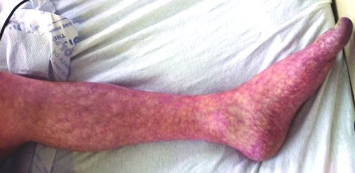

<!doctype html>
<html lang="it">
<head>
<meta charset="utf-8">
<meta name="viewport" content="width=device-width,initial-scale=1">
<title>Animazioni delle formule</title>
<link rel="stylesheet" href="widget.css">
<style>
body{margin:0;padding:8px 10px 10px}
.fm{text-align:center;margin:2px 0 6px;min-height:60px;display:flex;align-items:center;justify-content:center;flex-wrap:wrap;gap:2px 5px;font-size:18px;line-height:1.1}
.fm b{display:inline-block;transition:font-size .15s}
.fm span{color:#55697A}
canvas{display:block;width:100%;height:auto;border:1px solid var(--border);border-radius:10px;background:#FFFFFF}
.out{display:flex;align-items:center;gap:10px;margin:8px 0 6px;font-size:14px;flex-wrap:wrap}
.out .lab{font-weight:700;min-width:64px}
.bar{position:relative;flex:1 1 180px;height:16px;border-radius:8px;background:#EEF2F5;border:1px solid var(--border);overflow:hidden}
.bar i{position:absolute;top:0;bottom:0;border-radius:8px}
.bar u{position:absolute;top:-2px;bottom:-2px;width:2px;background:#16222E}
.out .val{font-weight:700;min-width:150px}
.sl{display:grid;grid-template-columns:repeat(auto-fit,minmax(250px,1fr));gap:6px 18px;margin:6px 0 4px}
.sl label{display:block;font-size:13px;line-height:1.3}
.sl label b{font-size:15px}
.sl label em{font-style:normal;float:right;font-weight:700}
.sl label small{display:block;color:#55697A;font-size:12px}
.sl input{width:100%;margin:2px 0 0}
.up{color:#0E7C66;font-weight:700}.dn{color:#B03A3A;font-weight:700}
.scn{position:relative;display:flex;gap:8px;align-items:stretch}.scn canvas{flex:1 1 0;min-width:0}#man{flex:0 0 205px;flex-direction:column;justify-content:flex-end;border:1px solid var(--border);border-radius:10px;background:#FFFFFF;display:flex;align-items:flex-end;justify-content:center}#man[hidden]{display:none}#man svg{display:block;width:100%;height:auto}.mcap{display:none;margin:0 4px 4px;font-size:11px;line-height:1.25;text-align:center;color:#55697A}.mcap i{display:inline-block;width:9px;height:9px;border-radius:50%;background:#F4D03F;border:1.5px solid #7A5C00;vertical-align:-1px;margin-right:3px}.mech{margin:6px 0 2px;padding:6px 10px;border-left:4px solid #1456A8;background:#EEF4FC;font-size:13.5px;line-height:1.4}.mech b{color:#1456A8}@media (max-width:520px){#man{flex-basis:100px}}
#circ{border:1px solid var(--border);border-radius:10px;background:#FFFFFF;margin:6px 0;padding:2px}.tp{position:relative;cursor:help;outline:none}.ar{font-style:normal;font-size:max(.48em,9px);vertical-align:.6em;margin-left:2px}.tp:hover::after,.tp:focus::after{content:attr(data-tip);position:absolute;left:50%;top:100%;transform:translateX(-50%);margin-top:7px;background:#16222E;color:#FFFFFF;font:500 12.5px/1.45 system-ui,-apple-system,Segoe UI,sans-serif;padding:7px 10px;border-radius:8px;white-space:pre-line;width:max-content;max-width:300px;z-index:30;text-align:left;box-shadow:0 3px 10px rgba(0,0,0,.25)}.tp:hover,.tp:focus{text-decoration:underline dotted;text-underline-offset:4px}#circ.nolab .lb{display:none}.glz{position:absolute;z-index:40;background:#FFFFFF;border:3px solid #2E8FDA;border-radius:16px;box-shadow:0 8px 22px rgba(0,0,0,.28);padding:9px 13px 10px;font-size:13px;line-height:1.45;color:#16222E;pointer-events:none;text-align:left}.glz .glt{font-weight:700;font-size:13.5px;margin-bottom:3px}.glz .glf{font-size:17px;text-align:center;margin:3px 0}.glz .gll{margin:5px 0 4px}.glz .gld{font-size:11.5px;color:#55697A;border-top:1px solid #DDE3E8;padding-top:4px}#circ svg{display:block;width:100%;height:auto}#gl{display:block;flex:1 1 300px;min-width:0;max-width:560px;height:auto;margin-left:auto}.gd{display:inline-block;width:9px;height:9px;border-radius:50%;margin-right:4px}.sgn{display:grid;grid-template-columns:repeat(auto-fit,minmax(104px,1fr));gap:6px;margin:6px 0}.sgn[hidden],#circ[hidden]{display:none}.sgn div{border:1px solid var(--border);border-radius:10px;background:#FFFFFF;padding:5px 6px 6px;text-align:center;font-size:12px;line-height:1.3}.sgn svg{display:block;width:62px;height:54px;margin:0 auto 2px}.sgn b{display:block;font-size:11px;color:#55697A;font-weight:700}.zl{position:absolute;left:213px;top:6px;width:250px;z-index:5;border:2.5px solid #16222E;border-radius:14px;background:#FFFFFF;box-shadow:0 8px 24px rgba(22,34,46,.28);padding:6px 8px;font-size:12.5px;text-align:center;pointer-events:none}.zl[hidden]{display:none}.zl svg{display:block;width:100%;height:auto}#mZ{cursor:zoom-in}
#fs{border:1px solid var(--border);border-radius:10px;background:#FFFFFF;margin:6px 0;padding:6px 8px}#fs[hidden]{display:none}#fs svg{display:block;width:100%;height:auto}.kid{display:flex;gap:10px;align-items:center;margin:8px 2px 2px;padding:8px 10px;border:1.5px solid #C9D3DC;border-radius:10px;background:#FBFCFD;flex-wrap:wrap}#circ .kid svg{display:block;width:52px;height:56px;flex:0 0 auto;margin:0}.kw.kwa{border-left-color:#E8960C;background:#FDF3E1}.kw.kwa b{color:#9A5B00}.lad{margin:6px 2px 2px;font-size:12.5px}.lad ol{list-style:none;margin:4px 0 0;padding:0;display:grid;grid-template-columns:repeat(4,1fr);gap:5px}.lad li{border:1.5px solid #DDE4EA;border-radius:9px;padding:5px 7px;background:#FBFCFD;color:#8696A4;line-height:1.3}.lad li b{display:block;font-size:12px}.lad li span{font-size:11px}.lad li.dn2{color:#55697A;border-color:#9DACB9;background:#F1F4F7}.lad li.cur{color:#16222E;border-width:2.5px}.lad li.s1,.lad li.s2{border-color:#1456A8;background:#E8F0FB}.lad li.s3{border-color:#E8960C;background:#FDF3E1}.lad li.s4{border-color:#B03A3A;background:#FCEBEB}@media (max-width:560px){.lad ol{grid-template-columns:1fr 1fr}}#circ svg.lift{flex:0 0 168px;width:168px;height:auto;display:block}@media (prefers-reduced-motion:no-preference){.lift.shk{animation:shk .18s linear infinite}}@keyframes shk{0%,100%{transform:translateX(0)}25%{transform:translateX(-1.2px)}75%{transform:translateX(1.2px)}}.per{display:grid;grid-template-columns:repeat(auto-fit,minmax(200px,1fr));gap:3px 14px;margin:6px 2px 2px;padding:7px 10px;border:1.5px solid #C9D3DC;border-radius:10px;background:#FBFCFD;font-size:12.5px}.per>b{grid-column:1/-1}.pi{display:flex;align-items:center;gap:6px}.pi span{flex:0 0 104px}.pi i{flex:1;height:9px;border-radius:5px;background:#EEF2F5;border:1px solid #DDE4EA;overflow:hidden}.pi u{display:block;height:100%}.pi em{font-style:normal;font-weight:700;flex:0 0 38px;text-align:right}.pi small{font-weight:400;color:#55697A}.kw{flex:1 1 100%;margin:2px 0 0;padding:5px 9px;border-left:4px solid #B03A3A;background:#FCEBEB;font-size:12.5px;line-height:1.4;color:#16222E}.kw b{color:#B03A3A}.kt{display:flex;flex-direction:column;font-size:12.5px;line-height:1.35;flex:1 1 150px;min-width:0}.kt:first-of-type{flex:3 1 280px}.kt .kf{font-size:15px;margin:2px 0}.kt small{color:#55697A;font-size:11px}.kt small.kn{font-size:11.5px}
.fsc{margin:2px 4px 0;font-size:12px;line-height:1.35}.fsh{display:flex;flex-wrap:wrap;align-items:center;gap:6px 10px;font-size:13.5px;margin:0 0 2px}.fsh b{margin-right:auto}.fsh button.pl{border-color:#55697A;color:#16222E;display:inline-flex;align-items:center}.fsh button.pl i{display:inline-block;width:20px;height:10px;border-radius:5px;border:1.3px solid #55697A;margin-right:6px}.fsh button.pl.on{background:#3E4A54;border-color:#3E4A54;color:#FFFFFF}.fsh2 button.rst{border-color:#55697A;color:#16222E}.fsh2{display:flex;justify-content:space-between;gap:8px;flex-wrap:wrap;margin:0 0 4px}.fsh button,.fsh2 button{font:inherit;font-size:13px;padding:3px 11px;border-radius:999px;border:1.5px solid #0E7C66;background:#FFFFFF;color:#0E7C66;font-weight:700;cursor:pointer}.fsh button.on{background:#0E7C66;color:#FFFFFF}.fsh button.bad,.fsh2 button.bad{border-color:#B03A3A;color:#B03A3A}.fsh button.bad.on,.fsh2 button.bad.on{background:#B03A3A;color:#FFFFFF}
.cs{display:grid;grid-template-columns:1fr 1fr;gap:8px;margin:8px 0 2px}.cs[hidden]{display:none}.cs button{font:inherit;text-align:left;border:1.5px solid #C9D3DC;border-radius:10px;padding:6px 10px;cursor:pointer;display:flex;flex-direction:column;line-height:1.3;color:#16222E}.cs button.on{border:3px solid #16222E;padding:4.5px 8.5px}.cs span{font-size:12.5px}.cs b{font-size:16px}.cs b small{font-size:12px;font-weight:700}.cs em{font-style:normal;font-size:12px;color:#55697A}
#kctl{display:none!important}.out.hid{display:none}#circ>.kw{margin:4px 2px}
.pre{display:flex;flex-wrap:wrap;gap:6px;margin:4px 0 8px}.pre button{font:inherit;font-size:13px;padding:4px 11px;border-radius:999px;border:1.5px solid #1456A8;background:#FFFFFF;color:#1456A8;font-weight:700;cursor:pointer}.pre button.on{background:#1456A8;color:#FFFFFF}
.sld{margin:6px 0 0}.sld summary{cursor:pointer;font-size:13.5px;font-weight:700;color:#1456A8;padding:5px 0;list-style-position:inside}.sld.plain summary{display:none}
.rs{font:inherit;font-size:13px;padding:4px 12px;border-radius:999px;border:1px solid var(--border-strong);background:#FFFFFF;cursor:pointer}
.sr-only{position:absolute;width:1px;height:1px;overflow:hidden;clip:rect(0 0 0 0)}
</style>
</head>
<body>
<h2 class="sr-only" id="sr"></h2>
<div class="fm" id="fm" aria-hidden="true"></div>
<div class="scn"><div id="man" hidden></div><canvas id="cv" width="680" height="250"></canvas></div>
<div class="cs" id="cs" hidden></div>
<p class="mech" id="mech" hidden></p>
<div id="circ" hidden></div>
<div id="kctl" class="sl" hidden></div>
<div id="fs" hidden></div>
<div class="sgn" id="sgn" hidden></div>
<div class="out"><span class="lab" id="ol"></span><div class="bar"><i id="bi"></i><u id="bu"></u></div><span class="val" id="ov"></span></div>
<div class="pre" id="pre"></div>
<details class="sld" id="sld"><summary id="sls"></summary>
<div class="sl" id="sl"></div>
<button type="button" class="rs" id="rs"></button>
</details>
<script>
(function(){
var it=document.documentElement.lang==='it',F=(new URLSearchParams(location.search).get('f'))||'darcy';
function T(a,b){return it?a:b;}
var UP=T('se sale, il flusso sale','if it rises, flow rises'),DN=T('se sale, il flusso scende','if it rises, flow falls');
var D={
darcy:{sr:T('Animazione della legge di Darcy: muovi i cinque termini e guarda il flusso','Animation of Darcy’s law: move the five terms and watch the flow'),res:'Q',rc:'#1456A8',q:T('Q = portata: volume che passa nell’unità di tempo&#10;[L³ T⁻¹] · m³/s','Q = flow rate: volume passing per unit time&#10;[L³ T⁻¹] · m³/s'),
 t:[{k:'dP',s:'ΔP',c:'#B03A3A',q:T('ΔP = differenza di pressione tra i due lati&#10;[M L⁻¹ T⁻²] · Pa (Pa = N/m²)','ΔP = pressure difference between the two sides&#10;[M L⁻¹ T⁻²] · Pa (Pa = N/m²)'),n:T('spinta: differenza di pressione','push: pressure difference'),d:1},
    {k:'k',s:'k',c:'#B5520C',q:T('k = permeabilità del materiale&#10;[L²] · m²','k = permeability of the material&#10;[L²] · m²'),n:T('permeabilità: quanti pori','permeability: how many pores'),d:1},
    {k:'A',s:'A',c:'#0E7C66',q:T('A = area attraversata&#10;[L²] · m²','A = area crossed&#10;[L²] · m²'),n:T('area dello strato','area of the layer'),d:1},
    {k:'mu',s:'μ',c:'#6A3A96',q:T('μ = viscosità dinamica del liquido&#10;[M L⁻¹ T⁻¹] · Pa·s (Pa = N/m²)','μ = dynamic viscosity of the fluid&#10;[M L⁻¹ T⁻¹] · Pa·s (Pa = N/m²)'),n:T('viscosità: acqua → miele','viscosity: water → honey'),d:-1},
    {k:'L',s:'L',c:'#8A6A00',q:T('L = spessore dello strato&#10;[L] · m','L = thickness of the layer&#10;[L] · m'),n:T('spessore dello strato','thickness of the layer'),d:-1}],
 f:function(v){return v.k*v.A*v.dP/(v.mu*v.L);},
 fm:function(B){return B('res')+'<span>=</span>'+B('k')+'<span>·</span>'+B('A')+'<span>·</span>'+B('dP')+'<span>/ (</span>'+B('mu')+'<span>·</span>'+B('L')+'<span>)</span>';}},
fick:{sr:T('Animazione della legge di Fick: muovi i quattro termini e guarda quante molecole passano','Animation of Fick’s law: move the four terms and watch how many molecules cross'),res:'J·A',rc:'#1456A8',q:T('J·A = quantità di sostanza che attraversa nell’unità di tempo&#10;[N T⁻¹] · mol/s&#10;(J da solo è il flusso per unità di area: [N L⁻² T⁻¹] · mol/(m²·s))','J·A = amount of substance crossing per unit time&#10;[N T⁻¹] · mol/s&#10;(J alone is the flux per unit area: [N L⁻² T⁻¹] · mol/(m²·s))'),
 t:[{k:'dC',s:'ΔC',c:'#B03A3A',q:T('ΔC = differenza di concentrazione tra i due lati&#10;[N L⁻³] · mol/m³','ΔC = concentration difference between the two sides&#10;[N L⁻³] · mol/m³'),n:T('differenza di concentrazione','concentration difference'),d:1,min:0},
    {k:'D',s:'D',c:'#B5520C',q:T('D = coefficiente di diffusione (diffusività)&#10;[L² T⁻¹] · m²/s','D = diffusion coefficient (diffusivity)&#10;[L² T⁻¹] · m²/s'),n:T('diffusività: quanto si agitano le molecole','diffusivity: how much the molecules jiggle'),d:1},
    {k:'A',s:'A',c:'#0E7C66',q:T('A = area della membrana&#10;[L²] · m²','A = area of the membrane&#10;[L²] · m²'),n:T('area della membrana','area of the membrane'),d:1},
    {k:'dx',s:'Δx',c:'#8A6A00',q:T('Δx = spessore della membrana&#10;[L] · m','Δx = thickness of the membrane&#10;[L] · m'),n:T('spessore della membrana','thickness of the membrane'),d:-1}],
 f:function(v){return v.D*v.A*v.dC/v.dx;},
 fm:function(B){return B('res')+'<span>=</span>'+B('D')+'<span>·</span>'+B('A')+'<span>·</span>'+B('dC')+'<span>/</span>'+B('dx');}},
starling:{sr:T('Animazione dell’equazione di Starling: muovi le forze e guarda se il liquido esce o rientra','Animation of the Starling equation: move the forces and watch whether fluid leaves or returns'),res:'J<sub>v</sub>',rc:'#1456A8',q:T('Jv = flusso di liquido attraverso la parete del capillare&#10;[L³ T⁻¹] · m³/s; in clinica mL/min','Jv = fluid flow across the capillary wall&#10;[L³ T⁻¹] · m³/s; clinically mL/min'),abs:1,up:T('se sale, esce più liquido','if it rises, more fluid leaves'),dn:T('se sale, esce meno liquido','if it rises, less fluid leaves'),
 pre:[[T('normale','normal'),{},'',T('Il filtrato è poco e la linfa lo porta via: nessun edema.','Little is filtered and lymph carries it away: no oedema.')],
  [T('scompenso sinistro','left heart failure'),{Pc:50},'lhf',T('<b>Problema di precarico, nel piccolo circolo.</b> Il cuore sinistro non smaltisce il sangue che torna dai polmoni: il sangue si accumula e la pressione alta del ventricolo si trasmette a ritroso a tutto il sangue collegato (principio di Pascal): vene polmonari, poi capillari del polmone, dove sale P<sub>c</sub>. Edema polmonare, fiato corto; le caviglie restano asciutte. Alla lunga la pressione risale fino all’arteria polmonare: per il cuore destro è un postcarico alto, e cede anche lui. (Nel polmone le pressioni vere sono più basse: P<sub>c</sub> normale circa 7–10 mmHg.)','<b>A preload problem, in the pulmonary circulation.</b> The left heart cannot clear the blood coming back from the lungs: blood accumulates and the high pressure in the ventricle is transmitted backwards to all the connected blood (Pascal’s principle): pulmonary veins, then lung capillaries, where P<sub>c</sub> rises. Pulmonary oedema, breathlessness; the ankles stay dry. In the long run the pressure climbs back to the pulmonary artery: for the right heart that is a high afterload, and it fails too. (In the lung real pressures are lower: normal P<sub>c</sub> about 7–10 mmHg.)')],
  [T('scompenso destro','right heart failure'),{Pc:50},'hf',T('<b>Problema di precarico, nel grande circolo.</b> Il cuore destro non smaltisce il sangue che torna dal corpo: ristagna nelle vene sistemiche e sale P<sub>c</sub> nei capillari del corpo. Caviglie gonfie da tutti e due i lati; i polmoni restano asciutti.','<b>A preload problem, in the systemic circulation.</b> The right heart cannot clear the blood coming back from the body: it backs up in the systemic veins and P<sub>c</sub> rises in the body’s capillaries. Swollen ankles on both sides; the lungs stay dry.')],
  [T('ipertensione polmonare','pulmonary hypertension'),{Pc:46},'ph',T('<b>Problema di postcarico, per il cuore destro.</b> Nell’arteria polmonare la pressione è alta: il ventricolo destro spinge contro una resistenza alta. Finché regge, nessun edema. Quando cede, il sangue ristagna nelle vene del corpo e torna a essere un problema di precarico: P<sub>c</sub> alta, caviglie gonfie. Se l’ostacolo è prima dei capillari, i polmoni restano asciutti.','<b>An afterload problem, for the right heart.</b> Pressure in the pulmonary artery is high: the right ventricle pushes against a high resistance. While it copes, no oedema. When it gives way, blood backs up in the body’s veins and it becomes a preload problem again: high P<sub>c</sub>, swollen ankles. If the obstacle is before the capillaries, the lungs stay dry.')],
  [T('vena chiusa (trombosi)','blocked vein (thrombosis)'),{Pc:52},'dvt',T('<b>Né precarico né postcarico:</b> è un blocco locale. A monte del trombo sale P<sub>c</sub>, in una gamba sola. Il sangue aggira il blocco passando dalle perforanti nelle vene superficiali, che si dilatano: è il circolo collaterale.','<b>Neither preload nor afterload:</b> a local block. Upstream of the clot P<sub>c</sub> rises, in one leg only. Blood bypasses the block through the perforating veins into the superficial veins, which dilate: the collateral circulation.')],
  [T('varici (valvole che non tengono)','varicose veins (leaky valves)'),{Pc:44},'var',T('<b>Né precarico né postcarico:</b> le valvole delle vene superficiali e delle perforanti non tengono. In piedi il sangue ricade verso il basso e dalle vene profonde torna nelle superficiali: pressione alta alla caviglia, vene dilatate, gonfiore la sera.','<b>Neither preload nor afterload:</b> the valves of the superficial and perforating veins leak. On standing, blood falls back down and returns from the deep veins into the superficial ones: high pressure at the ankle, dilated veins, swelling in the evening.')],
  [T('poca albumina','low albumin'),{pc:12},'alb',T('<b>Né precarico né postcarico:</b> mancano proteine nel plasma, cala π<sub>c</sub> e il richiamo si indebolisce. Edema diffuso, anche al viso.','<b>Neither preload nor afterload:</b> plasma proteins are missing, π<sub>c</sub> falls and the pull weakens. Widespread oedema, the face too.')],
  [T('infiammazione, ustione','inflammation, burn'),{sg:.4,Kf:2.5,pi:10},'infl',T('<b>Problema della parete:</b> lascia passare le proteine (σ scende) e ha più pori (K<sub>f</sub> sale). Edema locale, caldo e rosso.','<b>A wall problem:</b> it lets proteins through (σ falls) and has more pores (K<sub>f</sub> rises). Local oedema, warm and red.')],
  [T('linfatici bloccati','blocked lymphatics'),{ly:.1,pi:8},'lymph',T('<b>Problema di drenaggio:</b> il filtrato è normale ma nessuno lo porta via. Di solito un arto solo.','<b>A drainage problem:</b> filtration is normal but nothing carries it away. Usually one limb.')],
  [T('emorragia, disidratazione','bleeding, dehydration'),{Pc:18},'dehy',T('<b>Precarico basso:</b> c’è meno volume in circolo, P<sub>c</sub> scende e il liquido rientra dal tessuto nel sangue. È l’opposto dell’edema: il rischio è per il rene.','<b>Low preload:</b> there is less volume in the circulation, P<sub>c</sub> falls and fluid goes back from the tissue into the blood. The opposite of oedema: the risk is for the kidney.')]],
 t:[{k:'Pc',s:'P<sub>c</sub>',c:'#B03A3A',q:T('Pc = pressione idrostatica nel capillare&#10;[M L⁻¹ T⁻²] · Pa (Pa = N/m²); in clinica mmHg (1 mmHg ≈ 133 Pa)','Pc = hydrostatic pressure in the capillary&#10;[M L⁻¹ T⁻²] · Pa (Pa = N/m²); clinically mmHg (1 mmHg ≈ 133 Pa)'),n:T('pressione nel capillare: spinge fuori','pressure in the capillary: pushes out'),d:1,min:5,max:60,v:35,u:'mmHg'},
    {k:'pc',s:'π<sub>c</sub>',c:'#6A3A96',q:T('πc = pressione oncotica (colloido-osmotica) del plasma&#10;[M L⁻¹ T⁻²] · Pa (Pa = N/m²); in clinica mmHg (1 mmHg ≈ 133 Pa)','πc = oncotic (colloid osmotic) pressure of plasma&#10;[M L⁻¹ T⁻²] · Pa (Pa = N/m²); clinically mmHg (1 mmHg ≈ 133 Pa)'),n:T('proteine del plasma: richiamano dentro','plasma proteins: pull in'),d:-1,min:5,max:40,v:25,u:'mmHg'},
    {k:'Pi',s:'P<sub>i</sub>',c:'#C2571A',q:T('Pi = pressione idrostatica nell’interstizio&#10;[M L⁻¹ T⁻²] · Pa (Pa = N/m²); in clinica mmHg (1 mmHg ≈ 133 Pa)','Pi = hydrostatic pressure in the interstitium&#10;[M L⁻¹ T⁻²] · Pa (Pa = N/m²); clinically mmHg (1 mmHg ≈ 133 Pa)'),n:T('pressione nel tessuto: si oppone','pressure in the tissue: opposes'),d:-1,min:-5,max:20,v:0,u:'mmHg'},
    {k:'pi',s:'π<sub>i</sub>',c:'#8E1D4A',q:T('πi = pressione oncotica dell’interstizio&#10;[M L⁻¹ T⁻²] · Pa (Pa = N/m²); in clinica mmHg (1 mmHg ≈ 133 Pa)','πi = oncotic pressure of the interstitium&#10;[M L⁻¹ T⁻²] · Pa (Pa = N/m²); clinically mmHg (1 mmHg ≈ 133 Pa)'),n:T('proteine nel tessuto: richiamano fuori','proteins in the tissue: pull out'),d:1,min:0,max:20,v:3,u:'mmHg'},
    {k:'sg',s:'σ',c:'#55697A',q:T('σ = coefficiente di riflessione delle proteine&#10;adimensionale: da 0 (passano tutte) a 1 (non ne passa nessuna)','σ = reflection coefficient for proteins&#10;dimensionless: from 0 (all cross) to 1 (none cross)'),n:T('quanto la parete trattiene le proteine','how well the wall holds proteins back'),d:-1,min:0,max:1,v:1,u:'',st:.05},
    {k:'Kf',s:'K<sub>f</sub>',c:'#0B6E8C',q:T('Kf = coefficiente di filtrazione: permeabilità della parete × superficie&#10;[M⁻¹ L⁴ T] · m³/(s·Pa); in clinica mL/min per mmHg','Kf = filtration coefficient: wall permeability × surface area&#10;[M⁻¹ L⁴ T] · m³/(s·Pa); clinically mL/min per mmHg'),n:T('quanti pori ha la parete','how many pores the wall has'),d:0,min:.25,max:3,v:1,u:'×'},
    {k:'ly',s:'L',c:'#0E7C66',n:T('linfatici: quanto drenano','lymphatics: how much they drain'),d:0,min:0,max:1.5,v:1,u:'×',h:T('se scende, il liquido resta nel tessuto','if it falls, fluid stays in the tissue')}],
 f:function(v){return v.Kf*((v.Pc-v.Pi)-v.sg*(v.pc-v.pi));},
 fm:function(B){return B('res')+'<span>=</span>'+B('Kf')+'<span>· [(</span>'+B('Pc')+'<span>−</span>'+B('Pi')+'<span>) −</span>'+B('sg')+'<span>(</span>'+B('pc')+'<span>−</span>'+B('pi')+'<span>)]</span>';}}
}[F]||null;
if(!D)return;
document.getElementById('sr').textContent=D.sr;
var V={},DEF={};D.t.forEach(function(t){if(t.min==null)t.min=.25;if(t.max==null)t.max=3;if(t.v==null)t.v=1;if(t.u==null)t.u='×';V[t.k]=t.v;DEF[t.k]=t.v;});
var base=D.f(DEF);
var sl=document.getElementById('sl');
sl.innerHTML=D.t.map(function(t){return '<label><b style="color:'+t.c+'">'+t.s+'</b> '+t.n+'<em id="e_'+t.k+'" style="color:'+t.c+'"></em><small class="'+(t.d>0?'up':t.d<0?'dn':'')+'">'+(t.d>0?'↑ '+(D.up||UP):t.d<0?'↓ '+(D.dn||DN):t.h||T('amplifica il flusso, in qualunque verso','amplifies flow, in either direction'))+'</small><input type="range" id="i_'+t.k+'" min="'+t.min+'" max="'+t.max+'" step="'+(t.st||(t.u==='mmHg'?1:.05))+'" value="'+t.v+'" aria-label="'+t.n+'"></label>';}).join('');
document.getElementById('rs').textContent=T('↺ Valori normali','↺ Normal values');
var sld=document.getElementById('sld');if(F==='starling')document.querySelector('.out').classList.add('hid');if(F==='starling')document.getElementById('sls').textContent=T('Le forze di Starling, una per una: muovile a mano','The Starling forces, one by one: move them by hand');else{sld.open=true;sld.classList.add('plain');}
document.getElementById('ol').textContent=T('Flusso','Flow');
function fmt(x,d){var s=x.toFixed(d==null?2:d);return it?s.replace('.',','):s;}
function upd(){
 D.t.forEach(function(t){V[t.k]=+document.getElementById('i_'+t.k).value;document.getElementById('e_'+t.k).textContent=t.u==='×'?'×'+fmt(V[t.k]):t.u===''?fmt(V[t.k]):fmt(V[t.k],0)+' '+t.u;});
 var q=D.f(V),r=D.abs?q/Math.abs(base):q/base;
 var anyCh=D.t.some(function(t){return Math.abs(V[t.k]-DEF[t.k])>.021*(t.max-t.min);});
 function B(k){var ch,up,c,fs,sym,tip;
  if(k==='res'){var m=Math.min(4,Math.max(.12,Math.abs(r)));ch=Math.abs(r-1)>.04;up=r>1;c=D.rc;fs=Math.max(12,Math.min(46,20+13*Math.log(m)/Math.LN2));sym=D.res;tip=D.q;}
  else{var t=D.t.filter(function(x){return x.k===k;})[0],rel=D.abs?(t.k==='sg'?.5+V[k]*.5:t.k==='Pi'||t.k==='pi'?(V[k]-t.min+4)/(DEF[k]-t.min+4):V[k]/DEF[k]):V[k];rel=Math.min(4,Math.max(.16,rel));ch=Math.abs(V[k]-DEF[k])>.021*(t.max-t.min);up=V[k]>DEF[k];c=t.c;fs=Math.max(12,Math.min(46,20+13*Math.log(rel)/Math.LN2));sym=t.s;tip=t.q;}
  return '<b class="tp" tabindex="0" data-tip="'+tip+'" style="color:'+c+';font-size:'+fs.toFixed(0)+'px;'+(ch?'background:'+c+'22;border-radius:7px;padding:0 5px;box-shadow:0 0 0 1.5px '+c+'55':'')+'">'+(ch?sym+'<i class="ar">'+(up?'▲':'▼')+'</i>':'<span style="color:inherit;opacity:'+(anyCh?.38:1)+'">'+sym+'</span>')+'</b>';}
 document.getElementById('fm').innerHTML=D.fm(B);if(F==='starling'){if(VIEW==='B')PCB=V.Pc;else PCL=V.Pc;capSel();}var f2=document.getElementById('fm2');if(f2)f2.innerHTML=fm2h();
 var bi=document.getElementById('bi'),bu=document.getElementById('bu'),ov=document.getElementById('ov');
 if(D.abs){var net=(V.Pc-V.Pi)-V.sg*(V.pc-V.pi),w=Math.min(50,Math.abs(q)*1.1);bu.style.left='50%';bi.style.left=q>=0?'50%':(50-w)+'%';bi.style.width=w+'%';bi.style.background=q>=0?'#1456A8':'#6A3A96';
  ov.innerHTML=(Math.abs(net)<.5?T('fermo: le forze sono pari','still: the forces balance'):net>0?'<span style="color:#1456A8">'+T('esce','leaves')+' →</span>':'<span style="color:#6A3A96">← '+T('rientra','returns')+'</span>')+' <small>('+T('forza netta','net force')+' '+(net>0?'+':'')+fmt(net,0)+' mmHg)</small>';}
 else{var p=Math.min(100,33.3*Math.log(1+r*3.2)/Math.log(4.2)*1.5);bu.style.left='50%';bi.style.left='0';bi.style.width=Math.min(100,50*Math.sqrt(r))+'%';bi.style.background='#1456A8';
  ov.innerHTML='×'+fmt(r)+' '+(Math.abs(r-1)<.03?T('(normale)','(normal)'):r>1?'<span class="up">↑ '+T('più del normale','above normal')+'</span>':'<span class="dn">↓ '+T('meno del normale','below normal')+'</span>');}
 S.q=q;S.r=r;}
var S={q:0,r:1},P=[],dots={l:[],r:[],c:[],o:[]},acc=0,pacc=[];
D.t.forEach(function(t){document.getElementById('i_'+t.k).addEventListener('input',upd);});
var SITE='',COMP=false,HD={R:false,L:false},BPM='no',DRUG={n:false,a:false,d:false,b:false,m:false,s:false},DANIM='',SVR=1,PUMP=false;function setV(o,b){if(typeof ADJ!=='undefined')ADJ.pc=ADJ.pi=0;D.t.forEach(function(t){document.getElementById('i_'+t.k).value=o[t.k]!=null?o[t.k]:t.v;});upd();document.querySelectorAll('#pre button').forEach(function(q){q.classList.toggle('on',q===b);});}
document.getElementById('rs').addEventListener('click',function(){setV({},document.querySelector('#pre button'));SITE='';COMP=false;HD.R=HD.L=false;DRUG.n=DRUG.a=DRUG.d=DRUG.b=DRUG.m=DRUG.s=false;SVR=1;if(D.pre){mech(D.pre[0][3]);panels();}});
if(D.pre){var pr=document.getElementById('pre');pr.innerHTML=D.pre.map(function(q,i){return '<button type="button" data-i="'+i+'"'+(i?'':' class="on"')+'>'+q[0]+'</button>';}).join('');pr.addEventListener('click',function(e){var b=e.target.closest('button');if(b){var q=D.pre[+b.getAttribute('data-i')];COMP=false;HD.R=HD.L=false;DRUG.n=DRUG.a=DRUG.d=DRUG.b=DRUG.m=DRUG.s=false;SVR=1;VIEW='B';setV(q[1],b);PCB=+document.getElementById('i_Pc').value;SITE=q[2];VIEW=q[2]==='lhf'?'L':'B';mech(q[3]);panels();}});
D.t.forEach(function(t){document.getElementById('i_'+t.k).addEventListener('change',function(){document.querySelectorAll('#pre button').forEach(function(q){q.classList.remove('on');});});});}
var cv=document.getElementById('cv'),x=cv.getContext('2d'),W=680,H=250,dpr=Math.min(2,window.devicePixelRatio||1);cv.width=W*dpr;cv.height=H*dpr;x.scale(dpr,dpr);
function rr(a,b){return a+Math.random()*(b-a);}
function arrow(x0,y0,x1,y1,c,w){var a=Math.atan2(y1-y0,x1-x0),h=Math.max(7,w*2.6);if(Math.hypot(x1-x0,y1-y0)<3)return;x.strokeStyle=c;x.fillStyle=c;x.lineWidth=w;x.lineCap='round';x.beginPath();x.moveTo(x0,y0);x.lineTo(x1-Math.cos(a)*h*.7,y1-Math.sin(a)*h*.7);x.stroke();x.beginPath();x.moveTo(x1,y1);x.lineTo(x1-Math.cos(a-.45)*h,y1-Math.sin(a-.45)*h);x.lineTo(x1-Math.cos(a+.45)*h,y1-Math.sin(a+.45)*h);x.closePath();x.fill();}
function txt(s,X,Y,c,al,sz){x.font='700 '+(sz||13)+'px "IBM Plex Sans",system-ui,sans-serif';x.textAlign=al||'center';x.lineWidth=3.5;x.strokeStyle='#FFFFFF';x.lineJoin='round';x.strokeText(s,X,Y);x.fillStyle=c;x.fillText(s,X,Y);}
function setN(a,n,mk){while(a.length<n)a.push(mk());while(a.length>n)a.pop();}
function jig(a,x0,x1,y0,y1,amp,dt){a.forEach(function(p){p.vx+=rr(-1,1)*amp;p.vy+=rr(-1,1)*amp;p.vx*=.9;p.vy*=.9;p.x+=p.vx*dt;p.y+=p.vy*dt;if(p.x<x0){p.x=x0;p.vx=Math.abs(p.vx);}if(p.x>x1){p.x=x1;p.vx=-Math.abs(p.vx);}if(p.y<y0){p.y=y0;p.vy=Math.abs(p.vy);}if(p.y>y1){p.y=y1;p.vy=-Math.abs(p.vy);}});}
function wall(tw,hA,colS,colW){var x0=340-tw/2,y0=(H-hA)/2;x.fillStyle=colS;x.fillRect(x0,0,tw,H);x.fillStyle=colW;x.fillRect(x0,y0,tw,hA);return {x0:x0,x1:x0+tw,y0:y0,y1:y0+hA};}
function brace(X,y0,y1,c,s){x.strokeStyle=c;x.lineWidth=2;x.beginPath();x.moveTo(X-5,y0);x.lineTo(X,y0);x.lineTo(X,y1);x.lineTo(X-5,y1);x.stroke();txt(s,X+12,(y0+y1)/2+5,c,'left',15);}
function darcy(dt){var tw=16+26*V.L,hA=50+50*V.A,w,n=Math.max(1,Math.round(V.k*V.A*3)),v=V.dP/(V.mu*V.L),i,y;
 x.fillStyle='rgba(120,170,225,'+(.18+.14*V.dP)+')';x.fillRect(0,0,340,H);x.fillStyle='#F4F8FC';x.fillRect(340,0,340,H);
 w=wall(tw,hA,'#8696A4','#D9C7A3');
 while(pacc.length<n)pacc.push(Math.random());pacc.length=n;
 for(i=0;i<n;i++){y=w.y0+hA*(i+.5)/n;x.fillStyle='#F7F1E3';x.fillRect(w.x0,y-3.5,tw,7);pacc[i]+=dt*v*1.6;if(pacc[i]>=1){pacc[i]=0;P.push({x:w.x0-rr(20,60),y:y,vx:1,t:0});}}
 var sp=Math.min(320,Math.max(6,70*v)),rad=2.4+1.3*V.mu,mc=Math.min(1,(V.mu-.25)/2.75),col='rgb('+Math.round(40+190*mc)+','+Math.round(120+40*mc)+','+Math.round(215-190*mc)+')';
 P.forEach(function(p){p.x+=sp*dt*(p.x<w.x0?.9:p.x>w.x1?1.1:1);x.globalAlpha=p.x>620?Math.max(0,(680-p.x)/60):1;x.fillStyle=col;x.beginPath();x.arc(p.x,p.y,rad,0,7);x.fill();});x.globalAlpha=1;P=P.filter(function(p){return p.x<680;});
 arrow(22,H/2,22+26+34*V.dP,H/2,'#B03A3A',3+3.2*V.dP);txt('ΔP',40,H/2-16-2*V.dP,'#B03A3A','left',15);
 brace(w.x1+10,w.y0,w.y1,'#0E7C66','A');x.strokeStyle='#8A6A00';x.lineWidth=2;x.beginPath();x.moveTo(w.x0,H-12);x.lineTo(w.x1,H-12);x.moveTo(w.x0,H-17);x.lineTo(w.x0,H-7);x.moveTo(w.x1,H-17);x.lineTo(w.x1,H-7);x.stroke();txt('L',340,H-18,'#8A6A00','center',15);
 txt('k: '+n+' '+T('pori','pores'),340,16,'#B5520C','center',13);txt(T('alta pressione','high pressure'),12,22,'#55697A','left',12);txt(T('bassa pressione','low pressure'),668,22,'#55697A','right',12);txt('Q',640,H/2-12,'#1456A8','center',16);}
function fick(dt){var tw=8+18*V.dx,hA=50+50*V.A,w,nl=Math.round(14+38*V.dC),amp=26*Math.sqrt(V.D);
 x.fillStyle='#F6F9FC';x.fillRect(0,0,W,H);w=wall(tw,hA,'#8696A4','#EBD58F');
 setN(dots.l,nl,function(){return {x:rr(8,w.x0-8),y:rr(8,H-8),vx:0,vy:0};});setN(dots.r,14,function(){return {x:rr(w.x1+8,W-8),y:rr(8,H-8),vx:0,vy:0};});
 jig(dots.l,6,w.x0-6,6,H-6,amp,dt);jig(dots.r,w.x1+6,W-6,6,H-6,amp,dt);
 acc+=dt*V.D*V.A*V.dC/V.dx*3.2;while(acc>=1){acc-=1;P.push({x:w.x0,y:rr(w.y0+6,w.y1-6),t:0});}
 var sp=Math.min(260,Math.max(8,55*V.D/V.dx));x.fillStyle='#B03A3A';
 dots.l.concat(dots.r).forEach(function(p){x.beginPath();x.arc(p.x,p.y,3.4,0,7);x.fill();});
 P.forEach(function(p){p.x+=sp*dt*(p.x>w.x1?.7:1);p.y+=rr(-1,1)*amp*dt*.6;x.globalAlpha=p.x>w.x1+30?Math.max(0,1-(p.x-w.x1-30)/70):1;x.fillStyle='#1456A8';x.beginPath();x.arc(p.x,p.y,4,0,7);x.fill();});x.globalAlpha=1;P=P.filter(function(p){return p.x<w.x1+100;});
 brace(w.x1+10,w.y0,w.y1,'#0E7C66','A');x.strokeStyle='#8A6A00';x.lineWidth=2;x.beginPath();x.moveTo(w.x0,H-12);x.lineTo(w.x1,H-12);x.moveTo(w.x0,H-17);x.lineTo(w.x0,H-7);x.moveTo(w.x1,H-17);x.lineTo(w.x1,H-7);x.stroke();txt('Δx',340,H-18,'#8A6A00','center',15);
 txt(T('più concentrato','more concentrated'),12,22,'#B03A3A','left',12);txt(T('meno concentrato','less concentrated'),668,22,'#B03A3A','right',12);txt(T('in blu: quelle che stanno passando','in blue: the ones crossing'),340,16,'#1456A8','center',12);}
var E=.3,ADJ={pc:0,pi:0};
function oncAdj(){var a=Math.round(.7*Math.max(0,8-FS.R.x)),r=SITE==='infl'||SITE==='lymph'?0:-3*Math.max(0,Math.min(1,(E-.3)/.5)),b=Math.abs(r-ADJ.pi)>.65?Math.round(r):ADJ.pi;if(a===ADJ.pc&&b===ADJ.pi)return;var c=document.getElementById('i_pc'),i=document.getElementById('i_pi');c.value=+c.value-ADJ.pc+a;i.value=+i.value-ADJ.pi+b;ADJ.pc=a;ADJ.pi=b;upd();}
function starling(dt){oncAdj();var yT=92,yB=158,net=(V.Pc-V.Pi)-V.sg*(V.pc-V.pi),q=V.Kf*net,cap=20*V.ly,np=Math.max(3,Math.round(V.Kf*9)),i,X;
 var tg=q<=0?Math.max(.04,.3+q*.04):q<=cap?.3:Math.min(1,.3+(q-cap)*.07);E+=(tg-E)*Math.min(1,dt*.6);
 if(VIEW==='B')EB=E;else{var qb=V.Kf*((PCB-V.Pi)-V.sg*(V.pc-(V.pi-ADJ.pi))),tb=qb<=0?Math.max(.04,.3+qb*.04):qb<=cap?.3:Math.min(1,.3+(qb-cap)*.07);EB+=(tb-EB)*Math.min(1,dt*.6);}
 var th=10+74*E,sT=yT-th,sB=yB+th;
 x.fillStyle='#FFFFFF';x.fillRect(0,0,W,H);
 x.fillStyle='rgba(90,150,215,'+(.06+.34*E).toFixed(3)+')';x.fillRect(0,sT,W,sB-sT);x.fillStyle='#F8E9DF';x.fillRect(0,sT,W,sB-sT);x.fillStyle='rgba(70,140,220,'+(Math.max(0,E-.12)*.62).toFixed(3)+')';x.fillRect(0,sT,W,sB-sT);
 x.strokeStyle='#B98A6A';x.lineWidth=3;x.beginPath();x.moveTo(0,sT);x.lineTo(W,sT);x.moveTo(0,sB);x.lineTo(W,sB);x.stroke();
 x.fillStyle='#FBE1DD';x.fillRect(0,yT,W,yB-yT);
 x.strokeStyle='#B03A3A';x.lineWidth=5;x.setLineDash([W/np-9,9]);x.beginPath();x.moveTo(0,yT);x.lineTo(W,yT);x.moveTo(0,yB);x.lineTo(W,yB);x.stroke();x.setLineDash([]);
 setN(dots.c,Math.round(V.pc*1.3),function(){return {x:rr(6,W-6),y:rr(yT+8,yB-8),vx:0,vy:0};});setN(dots.o,Math.round(V.pi*1.6),function(){var up=Math.random()<.5;return {x:rr(6,W-60),y:up?yT-8:yB+8,vx:0,vy:0,up:up};});
 jig(dots.c,6,W-6,yT+7,yB-7,14,dt);dots.o.forEach(function(p){jig([p],6,W-60,p.up?sT+5:yB+8,p.up?yT-8:sB-5,14,dt);});
 x.fillStyle='#6A3A96';dots.c.forEach(function(p){x.beginPath();x.arc(p.x,p.y,3.6,0,7);x.fill();});x.fillStyle='#8E1D4A';dots.o.forEach(function(p){x.beginPath();x.arc(p.x,p.y,3.6,0,7);x.fill();});
 acc+=dt*Math.abs(q)*.55;while(acc>=1){acc-=1;var up=Math.random()<.5;P.push({x:Math.floor(rr(0,np-1))*W/np+W/np-4.5,up:up,s:0,out:q>0});}
 P.forEach(function(p){p.s+=dt*1.1;var d=p.out?p.s:1-p.s,y=p.up?yT-d*(th-4):yB+d*(th-4);x.globalAlpha=Math.min(1,p.out?(1-p.s)*2.5:p.s*2.5+.15);x.fillStyle=p.out?'#1456A8':'#6A3A96';x.beginPath();x.arc(p.x,y,4,0,7);x.fill();});x.globalAlpha=1;P=P.filter(function(p){return p.s<1;});
 var dr=Math.max(0,Math.min(q,cap));x.strokeStyle='#0E7C66';x.lineWidth=9;x.lineCap='round';x.globalAlpha=.25+.5*Math.min(1,V.ly);x.beginPath();x.moveTo(648,sT+6);x.lineTo(648,yT-10);x.moveTo(648,yB+10);x.lineTo(648,sB-6);x.stroke();x.globalAlpha=1;
 lacc+=dt*dr*.35;if(lacc>=1){lacc=0;LP.push({s:0,up:Math.random()<.5});}
 LP.forEach(function(p){p.s+=dt*.9;var y=p.up?yT-10-p.s*(th-16):yB+10+p.s*(th-16);x.fillStyle='#0E7C66';x.beginPath();x.arc(648,y,3.4,0,7);x.fill();});LP=LP.filter(function(p){return p.s<1;});
 if(V.ly<.3){x.strokeStyle='#B03A3A';x.lineWidth=3;x.beginPath();x.moveTo(640,yT-22);x.lineTo(656,yT-34);x.moveTo(656,yT-22);x.lineTo(640,yT-34);x.stroke();}
 var vd=verd(V.Pc),na=Math.min(7,Math.round(Math.abs(q)/4)),ai,ax,al=Math.min(th-6,12+Math.abs(q)*.5);
 for(ai=0;ai<na;ai++){ax=215+ai*(250/Math.max(1,na-1||1))*(na>1?1:0)+(na===1?125:0);if(q>0){arrow(ax,yT-3,ax,yT-3-al,'#1456A8',3.2);arrow(ax,yB+3,ax,yB+3+al,'#1456A8',3.2);}else{arrow(ax,yT-3-al,ax,yT-4,'#6A3A96',3.2);arrow(ax,yB+3+al,ax,yB+4,'#6A3A96',3.2);}}
 x.font='700 14px "IBM Plex Sans",system-ui,sans-serif';var vt=vd[0]+': '+vd[1],vw=x.measureText(vt).width+22;x.fillStyle=vd[3];x.strokeStyle=vd[2];x.lineWidth=1.8;x.beginPath();x.rect(340-vw/2,3,vw,22);x.fill();x.stroke();x.fillStyle=vd[2];x.textAlign='center';x.fillText(vt,340,19);
 var o=Math.max(0,V.Pc-V.Pi),n=Math.max(0,V.sg*(V.pc-V.pi)),k=Math.min(1.25,(th-8)/Math.max(1,Math.max(o,n)));
 arrow(150,yT-4,150,yT-4-o*k,'#B03A3A',5);arrow(150,yB+4,150,yB+4+o*k,'#B03A3A',5);arrow(500,yT-8-n*k,500,yT-6,'#6A3A96',5);arrow(500,yB+8+n*k,500,yB+6,'#6A3A96',5);
 txt(T('spinta fuori','push out')+' '+fmt(o,0),166,yT-12,'#B03A3A','left',13);txt(T('richiamo dentro','pull in')+' '+fmt(n,0),484,yT-12,'#6A3A96','right',13);
 txt(VIEW==='L'?T('capillare del polmone','lung capillary'):T('capillare del corpo','body capillary'),340,(yT+yB)/2+5,'#8E2F2F','center',13);txt(T('linfa','lymph'),648,yB+ th*.5+18<sB?sB-8:sB-8,'#0E7C66','center',12);
 var st=E>.72?[T('EDEMA','OEDEMA'),'#1456A8',17]:E>.42?[T('il tessuto si gonfia','the tissue is swelling'),'#1456A8',14]:q<-.5?[T('tessuto asciutto: il liquido rientra nel sangue','dry tissue: fluid goes back into the blood'),'#6A3A96',13]:q>cap?[T('filtra più di quanto la linfa drena','filtering more than lymph drains'),'#1456A8',13]:[T('tessuto normale: la linfa porta via il filtrato','normal tissue: lymph carries the filtrate away'),'#0E7C66',13];
 txt(st[0],340,sB<H-22?H-8:sB-8,st[1],'center',st[2]);txt(T('tessuto','tissue'),12,Math.max(16,sT+16),'#7A5038','left',12);}
var lacc=0,LP=[];
function mech(t){var m=document.getElementById('mech');m.hidden=false;m.innerHTML=t;}
if(F==='starling'){var mn=document.getElementById('man');mn.hidden=false;
mn.innerHTML='<svg viewBox="-50 0 200 250" role="img" aria-label="'+T('Un vecchietto: gli si gonfiano o gli si asciugano i tessuti','An old man: his tissues swell or dry out')+'">'
+'<path d="M72 160 C56 200 6 120 -24 150" fill="none" stroke="#C9A20C" stroke-width="2.4" stroke-linecap="round"/><path d="M72 160 C56 200 6 120 -24 150" fill="none" stroke="#FFF3B0" stroke-width="1" stroke-linecap="round"/><path d="M-30 146 h12 M-24 140 v6" stroke="#55697A" stroke-width="2" stroke-linecap="round"/><rect x="-42" y="150" width="36" height="60" rx="6" fill="#FFFFFF" stroke="#55697A" stroke-width="1.8"/><clipPath id="uC"><rect x="-41" y="151" width="34" height="58" rx="5"/></clipPath><rect id="uB" x="-41" y="200" width="34" height="9" fill="#F6E58D" clip-path="url(#uC)"/><g id="uF" opacity="0" fill="#FFFFFF" stroke="#9DACB9" stroke-width=".7"><circle cx="-34" cy="0" r="2.6"/><circle cx="-28" cy="-1" r="3"/><circle cx="-21" cy="0" r="2.6"/><circle cx="-14" cy="-1" r="2.8"/></g><path d="M-42 165 h5 M-42 180 h5 M-42 195 h5" stroke="#55697A" stroke-width="1"/><rect x="-4.5" y="182.9" width="4" height="13" rx="2" fill="#0E9F6E"/><path d="M-41 182.9 h34 M-41 195.9 h34" stroke="#0E9F6E" stroke-width="1" stroke-dasharray="3 2"/><text x="-24" y="134" font-size="9.5" text-anchor="middle" fill="#55697A">'+T('catetere','catheter')+'</text><text id="uT" x="-24" y="224" font-size="11" font-weight="700" text-anchor="middle" fill="#16222E"></text><text id="uT2" x="-24" y="236" font-size="9" text-anchor="middle" fill="#55697A"></text>'
+'<path d="M120 118 L128 238" stroke="#7A5038" stroke-width="4" stroke-linecap="round"/><path d="M112 118 Q120 108 126 118" fill="none" stroke="#7A5038" stroke-width="4" stroke-linecap="round"/>'
+'<rect id="mLl" x="52" y="150" width="16" height="74" rx="7" fill="#5B6B7C"/><rect id="mLr" x="82" y="150" width="16" height="74" rx="7" fill="#5B6B7C"/>'
+'<ellipse id="mAl" cx="60" cy="224" rx="8" ry="8" fill="#F2CDB0"/><ellipse id="mAr" cx="90" cy="224" rx="8" ry="8" fill="#F2CDB0"/>'
+'<ellipse cx="55" cy="238" rx="16" ry="7" fill="#3A2C22"/><ellipse cx="95" cy="238" rx="16" ry="7" fill="#3A2C22"/>'
+'<path id="mArm" d="M46 96 L34 142" stroke="#8C4A3A" stroke-width="12" stroke-linecap="round"/><circle id="mHand" cx="34" cy="146" r="6.5" fill="#F2CDB0"/>'
+'<path d="M104 96 L118 122" stroke="#8C4A3A" stroke-width="12" stroke-linecap="round"/><circle cx="119" cy="121" r="6.5" fill="#F2CDB0"/>'
+'<rect id="mT" x="42" y="78" width="66" height="84" rx="24" fill="#A8553F"/><ellipse id="mB" cx="75" cy="132" rx="30" ry="26" fill="#A8553F"/><path d="M75 82 V160" stroke="#7E3D2C" stroke-width="2"/><clipPath id="mLc"><ellipse cx="58" cy="106" rx="10" ry="16"/><ellipse cx="92" cy="106" rx="10" ry="16"/></clipPath><rect id="mW" x="46" y="122" width="58" height="0" fill="#5C8FD0" clip-path="url(#mLc)"/><g id="mCirc"></g>'
+'<circle id="mH" cx="75" cy="52" r="23" fill="#F2CDB0"/><path d="M53 46 Q50 60 56 66 M97 46 Q100 60 94 66" fill="none" stroke="#FFFFFF" stroke-width="6" stroke-linecap="round"/>'
+'<path d="M51 42 Q75 14 99 42 Z" fill="#4E5D6C"/><path d="M48 43 H106" stroke="#3B4754" stroke-width="5" stroke-linecap="round"/>'
+'<ellipse id="mEl" cx="66" cy="57" rx="6" ry="2" fill="#5C8FD0" opacity="0"/><ellipse id="mEr" cx="84" cy="57" rx="6" ry="2" fill="#5C8FD0" opacity="0"/>'
+'<circle cx="66" cy="51" r="5.5" fill="none" stroke="#16222E" stroke-width="1.5"/><circle cx="84" cy="51" r="5.5" fill="none" stroke="#16222E" stroke-width="1.5"/><path d="M71.5 51 H78.5" stroke="#16222E" stroke-width="1.5"/><circle cx="66" cy="51" r="1.6" fill="#16222E"/><circle cx="84" cy="51" r="1.6" fill="#16222E"/>'
+'<path id="mM" d="M66 65 Q75 61 84 65" fill="none" stroke="#FFFFFF" stroke-width="5" stroke-linecap="round"/>'
+'<g fill="none" stroke="#1456A8" stroke-width="1.6" stroke-linecap="round"><circle cx="103" cy="66" r="4.2" fill="#FFFFFF"/><path d="M106 69 L110 73"/><circle cx="112" cy="150" r="4.2" fill="#FFFFFF"/><path d="M115 153 L119 157"/><circle cx="36" cy="222" r="4.2" fill="#FFFFFF"/><path d="M39 225 L43 229"/></g><g><rect id="mF" x="44" y="166" width="62" height="80" rx="10" fill="#FFFFFF" fill-opacity="0" style="cursor:zoom-in"/><rect id="mC" x="40" y="88" width="70" height="72" rx="20" fill="#FFFFFF" fill-opacity="0" style="cursor:zoom-in"/><circle id="mZ" cx="75" cy="56" r="30" fill="#FFFFFF" fill-opacity="0"/>'
+'</g><text id="mTx" x="75" y="12" font-size="11" font-weight="700" text-anchor="middle" fill="#1456A8"></text></svg><p class="mcap" id="mcap"></p>';
var zl=document.createElement('div');zl.className='zl';zl.hidden=true;mn.parentNode.appendChild(zl);
function mouth(){zl.style.width='';var cy=COLD===2,pl=COLD===1,dry=EB<.2,lipc=dry?'#D9A08F':cy?'#8E7FB0':pl?'#DDA0A6':'#D9606F';zl.innerHTML='<svg viewBox="0 0 200 130" role="img" aria-label="'+T('Ingrandimento della bocca','Close-up of the mouth')+'"><rect width="200" height="130" rx="10" fill="#F2CDB0"/><path d="M30 60 Q100 20 170 60 Q100 124 30 60Z" fill="#7A2B2B"/><path d="M52 78 Q100 60 148 78 Q100 116 52 78Z" fill="'+(dry?'#D9A9A0':'#EE8FA0')+'"/><path d="M30 60 Q100 20 170 60 Q100 44 30 60Z" fill="'+(lipc)+'"/><path d="M30 60 Q100 124 170 60 Q100 104 30 60Z" fill="'+(lipc)+'"/>'+(dry?'<g stroke="#8E5A4E" stroke-width="1.6" fill="none" stroke-linecap="round"><path d="M70 46 l3 7 M96 40 l-2 8 M122 43 l3 7 M146 52 l-3 5 M78 98 l3 -6 M108 104 l-2 -7 M134 96 l3 -6"/><path d="M84 80 l10 6 l-6 8 M104 76 l8 9 M118 82 l-5 9 l8 4"/></g>':'<g fill="#FFFFFF" opacity=".85"><ellipse cx="80" cy="43" rx="14" ry="2.6"/><ellipse cx="124" cy="45" rx="9" ry="2"/><ellipse cx="92" cy="82" rx="12" ry="3"/><ellipse cx="120" cy="92" rx="6" ry="2"/></g><path d="M150 70 q4 8 0 12 q-4 -4 0 -12Z" fill="#9CC8F2"/>')+'</svg><b style="color:'+(dry?'#6A3A96':cy?'#B03A3A':pl?'#9A5B00':'#0E7C66')+'">'+(dry?T('mucose asciutte: labbra e lingua secche, screpolate','dry mucosae: dry, cracked lips and tongue'):cy?T('mucose umide ma labbra bluastre (cianosi): non manca acqua, manca flusso','moist mucosae but bluish lips (cyanosis): water is not missing, flow is'):pl?T('mucose umide, labbra pallide: la periferia riceve meno sangue','moist mucosae, pale lips: the periphery is getting less blood'):T('mucose umide e lucide: idratazione normale','moist, shiny mucosae: normal hydration'))+'</b>';}
function chest(){zl.style.width='';var wet=xLe()>20,o='<svg viewBox="0 0 200 130" role="img" aria-label="'+T('Ingrandimento del polmone: alveoli','Close-up of the lung: alveoli')+'"><rect width="200" height="130" rx="10" fill="#FBE9E6"/>';
 [[52,62],[100,50],[148,64]].forEach(function(c,i){o+='<circle cx="'+c[0]+'" cy="'+c[1]+'" r="30" fill="#FFFFFF" stroke="#C97A7A" stroke-width="3"/>'+(wet?'<path d="M'+(c[0]-28.5)+' '+(c[1]+9)+' A30 30 0 0 0 '+(c[0]+28.5)+' '+(c[1]+9)+' Q'+c[0]+' '+(c[1]+3)+' '+(c[0]-28.5)+' '+(c[1]+9)+'Z" fill="#7FB0E8"/><g fill="none" stroke="#1456A8" stroke-width="1.8" stroke-linecap="round"><path d="M'+(c[0]-8)+' '+(c[1]-6)+' l3 -6 m2 8 l6 -3 m-3 8 l6 2"><animate attributeName="opacity" values="0;1;0" dur="'+(0.7+i*.23)+'s" repeatCount="indefinite"/></path></g>':'');});
 o+='<path d="M10 104 H190" stroke="#B03A3A" stroke-width="7" stroke-linecap="round"/>'+(wet?'<path d="M40 100 v-6 M100 100 v-8 M160 100 v-6" stroke="#1456A8" stroke-width="2.4" stroke-dasharray="2 3"/>':'')+'<text x="100" y="122" font-size="10" text-anchor="middle" fill="#8E2F2F">'+T('capillare polmonare','lung capillary')+'</text></svg>';
 zl.innerHTML=o+'<b style="color:'+(wet?'#1456A8':'#0E7C66')+'">'+(wet?T('rantoli crepitanti alle basi: c’è liquido negli alveoli','crackles at the bases: there is fluid in the alveoli'):T('nessun rantolo: alveoli pieni d’aria, polmoni asciutti','no crackles: alveoli full of air, dry lungs'))+'</b>';}
var mc=mn.querySelector('#mC');mc.addEventListener('mouseenter',function(){chest();zl.hidden=false;});mc.addEventListener('mouseleave',function(){zl.hidden=true;});mc.addEventListener('click',function(){if(matchMedia('(hover: none)').matches){if(zl.hidden){chest();zl.hidden=false;}else zl.hidden=true;}});
function foot(){var cold=COLD===2,pale=COLD===1,sw=LEGS>.3,sk=cold?'#B7C2D6':pale?'#EFE6E1':'#F2CDB0',k=sw?1:0,o='<svg viewBox="0 0 200 130" role="img" aria-label="'+T('Ingrandimento di caviglia e piede','Close-up of ankle and foot')+'"><rect width="200" height="130" rx="10" fill="#F6F9FC"/>';
 o+='<path d="M'+(62-10*k)+' 0 V70 Q'+(60-12*k)+' 104 '+(40-8*k)+' 108 Q30 122 60 122 H168 Q190 122 186 '+(104-6*k)+' Q170 '+(84-10*k)+' 128 '+(80-8*k)+' Q'+(114+10*k)+' 60 '+(112+10*k)+' 0 Z" fill="'+sk+'" stroke="'+(cold?'#7C8AA6':'#C99A7A')+'" stroke-width="2"/>';
 if(cold)o+='<g fill="none" stroke="#8E5A8E" stroke-width="1.6" opacity=".75"><path d="M70 8 l12 12 l-10 14 l14 12 l-12 14 l16 14 M100 4 l-8 16 l14 10 l-10 16 l14 12 M84 20 l18 -2 M72 34 l24 -4 M86 46 l20 2 M74 60 l26 2 M96 88 l20 6 l18 -8 l20 10 M116 94 l-4 16 M134 86 l4 20 M70 100 l14 10 l-10 10"/></g>';
 if(sw)o+='<ellipse cx="88" cy="46" rx="11" ry="8" fill="#000000" opacity=".16"/><ellipse cx="88" cy="48" rx="8" ry="5" fill="#000000" opacity=".14"/><path d="M150 18 Q120 26 100 42" fill="none" stroke="#55697A" stroke-width="1.4" stroke-dasharray="3 3"/><text x="152" y="16" font-size="10.5" fill="#55697A">'+T('fovea','pit')+'</text>';
 o+='<path d="M150 122 q8 -8 18 -4 M166 122 q6 -6 14 -3" fill="none" stroke="'+(cold?'#7C8AA6':'#C99A7A')+'" stroke-width="1.4"/></svg>';
 var t=[];if(cold)t.push(T('livedo reticularis: stadio avanzato e grave','livedo reticularis: an advanced, severe stage'));if(pale)t.push(T('cute pallida e fredda, non ancora marezzata: primo segno di poca perfusione','pale, cold skin, not mottled yet: first sign of poor perfusion'));if(sw)t.push(T('edema che lascia la fovea: premi col dito e resta l’impronta','pitting oedema: press with a finger and the dent stays'));if(!t.length)t.push(T('cute rosea e calda, caviglia asciutta','pink, warm skin, dry ankle'));
 if(cold)o='<span style="display:block;font-size:9.5px;line-height:1.25;color:#55697A;margin:2px 0 3px">Livedo reticularis. '+T('Foto','Photo')+': Nantsupawat T et al., J Investig Med High Impact Case Rep 2013 · CC BY-SA 3.0 · Wikimedia Commons</span>';
 zl.innerHTML=o+'<b style="color:'+(cold?'#B03A3A':pale?'#9A5B00':sw?'#1456A8':'#0E7C66')+'">'+t.join(' + ')+'</b>'+(cold?'<span style="display:block;font-size:11.5px;line-height:1.3;margin-top:2px;color:#16222E">'+T('Arteriole strettissime + sangue venoso che ristagna: il reticolo violaceo sono le venule piene di sangue fermo e povero di ossigeno.','Very narrow arterioles + stagnant venous blood: the violaceous net is the venules full of still, oxygen-poor blood.')+'</span>':'');zl.style.width=cold?'285px':'';}
var mf=mn.querySelector('#mF');mf.addEventListener('mouseenter',function(){foot();zl.hidden=false;});mf.addEventListener('mouseleave',function(){zl.hidden=true;});mf.addEventListener('click',function(){if(matchMedia('(hover: none)').matches){if(zl.hidden){foot();zl.hidden=false;}else zl.hidden=true;}});
var mz=mn.querySelector('#mZ');mz.addEventListener('mouseenter',function(){mouth();zl.hidden=false;});mz.addEventListener('mouseleave',function(){zl.hidden=true;});mz.addEventListener('click',function(){if(matchMedia('(hover: none)').matches){if(zl.hidden){mouth();zl.hidden=false;}else zl.hidden=true;}});
mech(D.pre[0][3]);panels();}
function manCirc(st){var g=document.getElementById('mCirc');if(!g)return;var BL='#2F6DB5',RD='#D4380D',o='';
 var PA='M71 113 V98 H60 M71 98 H90',PV='M90 114 Q86 120 81 120 M60 116 Q68 132 79 126',AO='M78 128 V146 Q78 156 64 158 V220 M78 146 Q78 156 86 158 V220',VC='M72 128 V150',LV='M56 220 V160 Q56 152 72 150 M94 220 V160 Q94 152 72 150';
 var Z={lhf:{PV:[.5],PA:[3.6],LH:'x',RH:[4.6]},hf:{VC:[.5],LV:[1.6],RH:'x'},ph:{PA:[0,1],RH:[1.2],VC:[2.4],LV:[3.4]},dvt:{LV:[.4]},dehy:{low:1}}[st]||{};
 function sg(k,d,c){var z=Z[k],w=Z.low?1.2:2.2;return '<path d="'+d+'" fill="none" stroke="'+c+'" stroke-width="'+w+'" stroke-linecap="round" stroke-linejoin="round"'+(Z.low?' stroke-dasharray="3 3"':'')+'>'+(z?'<animate attributeName="stroke-width" from="2.2" to="'+(z[1]?5.4:4.6)+'" begin="'+z[0]+'s" dur=".7s" fill="freeze"/>':'')+'</path>';}
 o+=sg('AO',AO,RD)+sg('LV',LV,BL)+sg('VC',VC,BL)+sg('PA',PA,BL)+sg('PV',PV,RD);
 o+='<path d="M75 111 A9 9 0 0 0 75 129 Z" fill="'+BL+'"/><path d="M75 111 A9 9 0 0 1 75 129 Z" fill="'+RD+'"/><circle cx="75" cy="120" r="9" fill="none" stroke="#FFFFFF" stroke-width="1.2"/>';
 if(Z.LH==='x')o+='<path d="M77.5 116.5 l5 7 m0 -7 l-5 7" stroke="#FFFFFF" stroke-width="1.8" stroke-linecap="round"/>';
 if(Z.RH==='x')o+='<path d="M67.5 116.5 l5 7 m0 -7 l-5 7" stroke="#FFFFFF" stroke-width="1.8" stroke-linecap="round"/>';
 if(Z.RH&&Z.RH!=='x')o+='<circle cx="71" cy="120" r="6.5" fill="none" stroke="#F4D03F" stroke-width="2" opacity="0"><animate attributeName="opacity" from="0" to="1" begin="'+Z.RH[0]+'s" dur=".5s" fill="freeze"/></circle>';
 if(st==='dvt')o+='<path d="M90 176 l8 8 m0 -8 l-8 8" stroke="#B03A3A" stroke-width="2.2" stroke-linecap="round"/>';
 [[AO.split(' M')[0],RD,3.2],['M56 220 V160 Q56 152 72 150 V128',BL,3.6],['M71 113 V98 H60',BL,1.6],['M90 114 Q86 120 81 120',RD,1.4]].forEach(function(q){o+='<circle r="1.7" fill="#FFFFFF" stroke="'+q[1]+'" stroke-width=".8"><animateMotion dur="'+(q[2]*(Z.low?2:1))+'s" repeatCount="indefinite" path="'+q[0]+'"/></circle>';});
 var back={lhf:'M81 120 Q86 120 90 114 L90 98 H71 V113',hf:'M72 128 V150 Q56 152 56 160 V220',ph:'M62 98 H71 V113 L72 128 V150 Q56 152 56 160 V220'}[st];
 if(back)o+='<circle r="3.4" fill="#F4D03F" stroke="#7A5C00" stroke-width="1.2"><animateMotion dur="3.4s" repeatCount="indefinite" path="'+back+'"/></circle>';
 g.innerHTML=o;var c=document.getElementById('mcap');c.innerHTML=back?'<i></i>'+T('la pressione risale a ritroso (Pascal)','pressure climbs backwards (Pascal)'):Z.low?T('poco volume in tutto il circuito','low volume in the whole circuit'):T('il circuito: cuore, polmoni, corpo','the circuit: heart, lungs, body');}
var FS={R:{c:[1,6],x:8},L:{c:[1,6],x:8}},KA=1,KE=1;function aftL(){var e=svrE(),k=FS.L.c[0]<.95?.3:.05;return e>1?Math.max(.4,1-k*(e-1)):FS.L.c[0]<.95?Math.min(1.2,1+.9*(1-e)):1;}function xLe(){return FS.L.x+(1-aftL())*25;}function outLa(){return Math.min(1.1,aftL()*fsF(FS.L.c,FS.L.x)/fsF([1,6],8));}function outR(){return fsF(FS.R.c,FS.R.x)/fsF([1,6],8);}function outL(){return Math.min(outLa(),outR());}var VIEW='B',PCL=35,PCB=35,EB=.3,COLD=0,LEGS=0,URN={ur:60,col:'#F6E58D',f:false};function svrE(){return SVR*(DRUG.a?.88:1)*(DRUG.n?1.05:1);}function bpNow(){var m=93*outL()*svrE();return [Math.round(m*1.29),Math.round(m*.86),m];}function kaE(){return Math.max(.5,(KA-.67*Math.max(0,svrE()-1.6))*(DRUG.s?.93:1));}function keE(){return DRUG.a?KE:Math.max(.5,KE*(1-.8*Math.max(0,SVR-1)));}function vF(){var a=kaE(),e=keE();return 2/(1/(a*a)+1/(e*e));}function gNet(out){var m=93*out*svrE();return Math.max(0,Math.min(18,10-Math.max(0,80-m)*.2-Math.max(0,.75-out)*10+6*(kaE()-1)+6*(1-keE())-18*Math.max(0,.72-vF())-(DRUG.d?1.5*Math.max(0,Math.min(1,(8-FS.R.x)/3)):0)-.1*Math.max(0,FS.R.x-12)+(BPM==='hi'?1.5*Math.max(0,Math.min(1,(KA-.8)/.2))+8*Math.max(0,KA-1):0)));}function fsF(c,x){return c[0]*(1-Math.exp(-x/c[1]));}
function fsSet(){var st=SITE;document.getElementById('fs').hidden=true;
 var N=[1,6],M=[.75,11],B=[.5,12],AF=[.72,8],H=[.8,9];
 var C={lhf:COMP?{L:[M,18,T('curva più bassa: si riempie di più e recupera quasi tutta la gittata','lower curve: it fills more and recovers almost all its output')],R:[N,8,T('per ora lavora normalmente','working normally for now')]}:{L:[B,27,T('curva piatta: più riempimento non dà più gittata, e supera la soglia','flat curve: more filling gives no more output, and it passes the threshold')],R:[AF,11.5,T('postcarico alto: curva più bassa, deve riempirsi di più','high afterload: lower curve, it has to fill more')]},
  hf:COMP?{R:[M,18,T('curva più bassa: si riempie di più e recupera quasi tutta la gittata','lower curve: it fills more and recovers almost all its output')],L:[N,8,T('lavora normalmente','working normally')]}:{R:[B,27,T('curva piatta: più riempimento non dà più gittata, e supera la soglia','flat curve: more filling gives no more output, and it passes the threshold')],L:[N,5,T('cuore sano, ma gli arriva meno sangue: scivola a sinistra','healthy heart, but less blood reaches it: it slides to the left')]},
  ph:COMP?{R:[H,16,T('postcarico alto: regge con l’ipertrofia e riempiendosi di più','high afterload: it copes by hypertrophy and by filling more')],L:[N,8,T('lavora normalmente','working normally')]}:{R:[B,27,T('ha ceduto: curva piatta, supera la soglia','it has given way: flat curve, past the threshold')],L:[N,5,T('cuore sano, ma gli arriva meno sangue: scivola a sinistra','healthy heart, but less blood reaches it: it slides to the left')]},
  dehy:{R:[N,3.5,T('poco riempimento: gittata bassa','little filling: low output')],L:[N,3.5,T('poco riempimento: gittata bassa','little filling: low output')]}}[st]||{R:[N,8,T('punto normale','normal point')],L:[N,8,T('punto normale','normal point')]};
 FS={R:{c:C.R[0],x:C.R[1]},L:{c:C.L[0],x:C.L[1]}};if(HD.R)FS.R={c:B,x:27};if(HD.L)FS.L={c:B,x:27};['R','L'].forEach(function(k){var q=FS[k],wk=q.c[0]<.95,sh=(DRUG.d?3+.3*Math.max(0,q.x-8):0)+(DRUG.m?1:0)+(DRUG.s?1:0)+(DRUG.a&&q.x>14?2:0),up=wk?(DRUG.b?.06:0)+(DRUG.a?.04:0)+(DRUG.m?.03:0)+(DRUG.s?.03:0)+(DRUG.d&&q.x>20?.05:0):0;FS[k]={c:[q.c[0]+up,q.c[1]],x:Math.max(2,q.x-sh)};});}
function verd(pc,oth){var net=(pc-V.Pi)-V.sg*(V.pc-(V.pi-(oth?ADJ.pi:0))),q=V.Kf*net,cap=20*V.ly;return q<-.5?[T('RIASSORBE','REABSORBS'),T('il liquido rientra nel sangue','fluid goes back into the blood'),'#6A3A96','#F1E6F7',net]:q<3?[T('QUASI FERMO','ALMOST STILL'),T('non filtra','no filtration'),'#55697A','#EEF2F5',net]:q<=cap?[T('FILTRA','FILTERS'),T('la linfa drena tutto','lymph drains it all'),'#0E7C66','#DDF3EC',net]:[T('FILTRA TROPPO','FILTERS TOO MUCH'),T('la linfa non basta: edema','lymph cannot keep up: oedema'),'#B03A3A','#FCEBEB',net];}
function capSel(){var c=document.getElementById('cs');if(!c)return;c.hidden=false;function one(k,name,pc){var v=verd(pc,k!==VIEW);return '<button type="button" data-v="'+k+'" class="'+(VIEW===k?'on':'')+'" style="background:'+v[3]+'"><span>'+name+' · P<sub>c</sub> '+pc+' mmHg</span><b style="color:'+v[2]+'">'+v[0]+' <small>('+(v[4]>0?'+':'')+fmt(v[4],0)+' mmHg)</small></b><em>'+v[1]+'</em></button>';}
 c.innerHTML=one('L',T('Capillare del polmone','Lung capillary'),PCL)+one('B',T('Capillare del corpo','Body capillary'),PCB);}
document.addEventListener('click',function(e){var b=e.target.closest&&e.target.closest('#cs button[data-v]');if(!b)return;VIEW=b.getAttribute('data-v');document.getElementById('i_Pc').value=VIEW==='L'?PCL:PCB;upd();if(document.getElementById('circ').firstChild)circDraw();});
function fm2h(){var pc=+document.getElementById('i_Pc').value,d=pc-35;return document.getElementById('fm').innerHTML+'<span style="flex:1 1 100%;text-align:center;font-size:12.5px;color:#16222E"><b style="color:#B03A3A;font-size:13px">P<sub>c</sub> = '+pc+' mmHg'+(d>1?' ↑':d<-1?' ↓':'')+'</b>'+(ADJ.pc?' · <b style="color:#6A3A96;font-size:13px" title="'+T('poco volume: il sangue è più concentrato','low volume: the blood is more concentrated')+'">π<sub>c</sub> = '+document.getElementById('i_pc').value+' ↑</b>':'')+(ADJ.pi?' · <b style="color:#8E1D4A;font-size:13px" title="'+T('l’edema diluisce le proteine del tessuto','oedema dilutes the tissue proteins')+'">π<sub>i</sub> = '+document.getElementById('i_pi').value+' ↓</b>':'')+' · '+(VIEW==='L'?T('capillare del polmone: più resistenze = più postcarico = più ristagno a monte','lung capillary: more resistance = more afterload = more back-up upstream'):d>1&&svrE()>=.95?T('sangue che ristagna nelle vene: la pressione risale fino al capillare','blood backing up in the veins: the pressure rises back to the capillary'):d>1?T('arteriole larghe: al capillare arriva più pressione, esce più liquido','wide arterioles: more pressure reaches the capillary, more fluid leaves'):d<-1&&svrE()>1.05?T('arteriole strette: al capillare a valle arriva meno pressione, esce meno liquido','narrow arterioles: less pressure reaches the capillary downstream, less fluid leaves'):d<-1&&FS.R.x<7?T('poco volume: le vene sono meno piene, nel capillare c’è meno pressione, esce meno liquido','low volume: the veins are less full, there is less pressure in the capillary, less fluid leaves'):d<-1?T('pressione arteriosa bassa: al capillare arriva meno spinta, esce meno liquido','low arterial pressure: less push reaches the capillary, less fluid leaves'):T('capillare del corpo','body capillary'))+'</span>';}
function linkPc(){var st=SITE,f=function(x){return x<8?35+(x-8)*2:35+(x-8)*.3+Math.max(0,x-20)*1.7;},cl=function(p){return Math.round(Math.max(5,Math.min(60,p)));},ip=document.getElementById('i_Pc');PCL=cl(f(xLe()));if(['','lhf','hf','ph','dehy'].indexOf(st)>=0)PCB=cl(f(FS.R.x)+bpNow()[2]*.2/Math.pow(svrE(),1.6)-18.6);else if(VIEW==='B')PCB=+ip.value;ip.value=VIEW==='L'?PCL:PCB;upd();}
document.addEventListener('click',function(e){var b=e.target.closest&&e.target.closest('#circ button[data-lab]');if(!b)return;LAB=!LAB;circDraw();});
document.addEventListener('click',function(e){var b=e.target.closest&&e.target.closest('#circ button[data-r]');if(!b)return;COMP=false;HD.R=HD.L=false;DRUG.n=DRUG.a=DRUG.d=DRUG.b=DRUG.m=DRUG.s=false;SVR=1;kreset();fsSet();linkPc();circDraw();});
document.addEventListener('click',function(e){var b=e.target.closest&&e.target.closest('#circ button[data-d]');if(!b)return;var k=b.getAttribute('data-d');DRUG[k]=!DRUG[k];DANIM=DRUG[k]?k:'';if(k!=='n'){fsSet();linkPc();}if(!DRUG[k]&&k==='n'){document.getElementById('i_ka').value=1;KA=1;}if(!DRUG[k]&&k==='a'){document.getElementById('i_ke').value=1;KE=1;}drugClamp();linkPc();circDraw();DANIM='';});
function svrStep(d){SVR=Math.max(.5,Math.min(2.2,Math.round((SVR+d)*10)/10));PUMP=d>0;linkPc();circDraw();PUMP=false;}
document.addEventListener('click',function(e){var t=e.target.closest&&(e.target.closest('#circ button[data-s]')||e.target.closest('.cuffp')||e.target.closest('.cuffr'));if(!t)return;svrStep(t.hasAttribute&&t.hasAttribute('data-s')?.1*(+t.getAttribute('data-s')):t.classList.contains('cuffp')?.1:-.1);});
document.addEventListener('keydown',function(e){var t=e.target.closest&&(e.target.closest('.cuffp')||e.target.closest('.cuffr'));if(!t||(e.key!=='Enter'&&e.key!==' '))return;e.preventDefault();svrStep(t.classList.contains('cuffp')?.1:-.1);});
document.addEventListener('click',function(e){var b=e.target.closest&&e.target.closest('#circ button[data-b]');if(!b)return;BPM=b.getAttribute('data-b');circDraw();});
document.addEventListener('click',function(e){var b=e.target.closest&&e.target.closest('#circ button[data-h]');if(!b)return;var k=b.getAttribute('data-h');HD[k]=!HD[k];fsSet();linkPc();circDraw();});
document.addEventListener('click',function(e){var b=e.target.closest&&e.target.closest('#circ button[data-c]');if(!b)return;COMP=b.getAttribute('data-c')==='1';fsSet();linkPc();circDraw();});
function vReset(e){if(!e.target.closest||!e.target.closest('.vr'))return;if(e.type==='keydown'&&e.key!=='Enter'&&e.key!==' ')return;e.preventDefault();kreset();circDraw();}document.addEventListener('click',vReset);document.addEventListener('keydown',vReset);
var dragV=null,lastA=0;function vAng(e,v){var sv=document.querySelector('#circ svg');if(!sv)return 0;var p=sv.createSVGPoint();p.x=e.clientX;p.y=e.clientY;p=p.matrixTransform(sv.getScreenCTM().inverse());return Math.atan2(p.y-(v==='a'?134:197),p.x-455);}
document.addEventListener('pointerdown',function(e){var a=e.target.closest&&e.target.closest('.vw');if(!a)return;if((a.getAttribute('data-v')==='a'&&DRUG.n)||(a.getAttribute('data-v')==='e'&&DRUG.a))return;dragV=a.getAttribute('data-v');lastA=vAng(e,dragV);e.preventDefault();});
document.addEventListener('pointermove',function(e){if(!dragV)return;e.preventDefault();var a=vAng(e,dragV),d=a-lastA;if(d>Math.PI)d-=2*Math.PI;if(d<-Math.PI)d+=2*Math.PI;lastA=a;var i=document.getElementById(dragV==='a'?'i_ka':'i_ke');i.value=Math.max(.5,Math.min(1.5,+i.value-d/(2*Math.PI)));i.dispatchEvent(new Event('input',{bubbles:true}));});
['pointerup','pointercancel'].forEach(function(n){document.addEventListener(n,function(){dragV=null;});});
var dragK=null;function dragTo(e){var sv=document.querySelector('#circ svg');if(!sv||!dragK)return;var p=sv.createSVGPoint();p.x=e.clientX;p.y=e.clientY;p=p.matrixTransform(sv.getScreenCTM().inverse());var ox=dragK==='R'?-64:512;FS[dragK].x=Math.max(1,Math.min(29.5,(p.x-ox-26)/6.67));linkPc();circDraw();}
document.addEventListener('pointerdown',function(e){var a=e.target.closest&&e.target.closest('.fsa');if(!a)return;dragK=a.getAttribute('data-k');e.preventDefault();dragTo(e);});
document.addEventListener('pointermove',function(e){if(dragK){e.preventDefault();dragTo(e);}});
['pointerup','pointercancel'].forEach(function(n){document.addEventListener(n,function(){dragK=null;});});
function kctl(){var k=document.getElementById('kctl');k.hidden=false;if(k.firstChild)return;
 k.innerHTML='<label><b style="color:#8E3B2C">'+T('Arteriola afferente','Afferent arteriole')+'</b> '+T('(volantino sopra il rene: ruotalo, o usa il cursore)','(wheel above the kidney: turn it, or use the slider)')+'<em id="e_ka" style="color:#8E3B2C"></em><small class="up">'+T('più larga → entra più sangue nel glomerulo → ΔP sale','wider → more blood enters the glomerulus → ΔP rises')+'</small><input type="range" id="i_ka" min=".5" max="1.5" step=".01" value="1" aria-label="'+T('Calibro dell’arteriola afferente','Calibre of the afferent arteriole')+'"></label><label><b style="color:#8E3B2C">'+T('Arteriola efferente','Efferent arteriole')+'</b> '+T('(volantino sotto il rene)','(wheel below the kidney)')+'<em id="e_ke" style="color:#8E3B2C"></em><small class="dn">'+T('più stretta → il sangue esce a fatica → ΔP sale','narrower → blood leaves with difficulty → ΔP rises')+'</small><input type="range" id="i_ke" min=".5" max="1.5" step=".01" value="1" aria-label="'+T('Calibro dell’arteriola efferente','Calibre of the efferent arteriole')+'"></label>';
 function rd(){KA=+document.getElementById('i_ka').value;KE=+document.getElementById('i_ke').value;document.getElementById('e_ka').textContent=T('calibro ×','calibre ×')+fmt(KA);document.getElementById('e_ke').textContent=T('calibro ×','calibre ×')+fmt(KE);}
 k.addEventListener('input',function(){rd();drugClamp();circDraw();});rd();}
function drugClamp(){var a=document.getElementById('i_ka'),e=document.getElementById('i_ke');if(!a)return;if(DRUG.n){a.value=.8;KA=.8;}if(DRUG.a){e.value=1.25;KE=1.25;}a.disabled=DRUG.n;e.disabled=DRUG.a;document.getElementById('e_ka').textContent=(DRUG.n?T('col lucchetto ×','padlocked ×'):T('calibro ×','calibre ×'))+fmt(KA);document.getElementById('e_ke').textContent=(DRUG.a?T('saltata, aperta ×','blown, open ×'):T('calibro ×','calibre ×'))+fmt(KE);}
function kreset(){var a=document.getElementById('i_ka');if(!a)return;a.value=1;document.getElementById('i_ke').value=1;KA=KE=1;document.getElementById('e_ka').textContent=T('calibro ×','calibre ×')+fmt(1);document.getElementById('e_ke').textContent=T('calibro ×','calibre ×')+fmt(1);drugClamp();}
function panels(){if(F!=='starling')return;kctl();kreset();fsSet();linkPc();circDraw();var g=document.getElementById('sgn'),st=SITE;
 g.hidden=st!=='dehy';if(st!=='dehy')return;
 function cd(svg,t,u){return '<div><svg viewBox="0 0 62 54" aria-hidden="true">'+svg+'</svg><b>'+t+'</b>'+u+'</div>';}
 g.innerHTML=cd('<path d="M16 8 H46 L42 48 H20 Z" fill="#FFFFFF" stroke="#55697A" stroke-width="2"/><path d="M19.4 40 H42.6 L42 48 H20 Z" fill="#9CC8F2"/><path d="M31 14 v14 m-5 -5 l5 6 l5 -6" stroke="#B03A3A" stroke-width="2" fill="none" stroke-linecap="round" stroke-linejoin="round"/>',T('1 · causa','1 · cause'),T('beve poco o perde liquidi','drinks little or loses fluid'))
 +cd('<circle cx="31" cy="27" r="17" fill="#FDE9E3" stroke="#B03A3A" stroke-width="2"/><path d="M12 28 h9 l4 -10 l6 18 l5 -12 l3 4 h11" fill="none" stroke="#B03A3A" stroke-width="2" stroke-linejoin="round"/>',T('2 · circolo','2 · circulation'),T('polso veloce, pressione bassa in piedi','fast pulse, low pressure on standing'))
 +cd('<path d="M10 20 Q31 6 52 20 Q31 46 10 20Z" fill="#7A2B2B"/><path d="M10 20 Q31 6 52 20 Q31 14 10 20Z M10 20 Q31 46 52 20 Q31 36 10 20Z" fill="#D9A08F"/><path d="M22 15 l1 3 M31 12 v3 M40 15 l-1 3 M26 34 l1 -3 M37 34 l-1 -3" stroke="#8E5A4E" stroke-width="1.3"/>',T('3 · mucose','3 · mucosae'),T('asciutte: passa sul viso per ingrandire','dry: hover over the face to zoom'))
 +cd('<path d="M22 6 H40 V14 L44 20 V46 Q44 50 40 50 H22 Q18 50 18 46 V20 L22 14 Z" fill="#FFFFFF" stroke="#55697A" stroke-width="2"/><path d="M19 40 H43 V46 Q43 49 40 49 H22 Q19 49 19 46 Z" fill="#C98A0A"/>',T('4 · urine','4 · urine'),T('poche, scure, con poco sodio','scanty, dark, low in sodium'))
 +cd('<circle cx="31" cy="27" r="11" fill="#FBEAE8" stroke="#B03A3A" stroke-width="2"/><path d="M2 20 Q12 22 21 24" stroke="#D4380D" stroke-width="7" fill="none" stroke-linecap="round"/><path d="M41 30 Q50 32 60 36" stroke="#8E1D4A" stroke-width="2.4" fill="none" stroke-linecap="round"/>',T('5 · rene','5 · kidney'),T('afferente larga, efferente stretta: difende il filtrato','wide afferent, narrow efferent: it defends filtration'))
 +cd('<rect x="12" y="20" width="26" height="12" rx="6" fill="#F4D35E" stroke="#8A6A00" stroke-width="1.6" transform="rotate(-25 25 26)"/><circle cx="42" cy="34" r="8" fill="#FFFFFF" stroke="#55697A" stroke-width="1.6"/><path d="M8 46 L54 8" stroke="#B03A3A" stroke-width="3.2" stroke-linecap="round"/>',T('6 · da evitare','6 · avoid'),T('FANS, ACE-inibitori e sartani, diuretici','NSAIDs, ACE inhibitors and sartans, diuretics'))
 +cd('<path d="M16 8 H46 L42 48 H20 Z" fill="#FFFFFF" stroke="#55697A" stroke-width="2"/><path d="M17.2 16 H44.8 L42 48 H20 Z" fill="#9CC8F2"/><path d="M31 22 v14 M24 29 h14" stroke="#0E7C66" stroke-width="3" stroke-linecap="round"/>',T('7 · cosa fare','7 · what to do'),T('ridare volume: il filtrato torna','give volume back: filtration returns'));}
var LAB=false;function circDraw(){var c=document.getElementById('circ'),st=SITE;c.hidden=false;c.classList.toggle('nolab',!LAB);var bp0=bpNow()[0];BPM=bp0>140?'hi':bp0<100?'lo':'no';
 var Z={'':{},lhf:{LH:'w',PV:1,PC:1,PA:1,look:'PC'},hf:{RH:'w',VC:1,DV:1,DL:1,SU:1,CO:1,SC:1},ph:{PA:2,RH:'s',VC:1,DV:1,DL:1,SU:1,CO:1,SC:1},dvt:{DV:'x',DL:1,CO:'r',SU:1,SC:1},'var':{SU:1,CO:'r',SC:1,wavy:1},alb:{SC:'p'},infl:{SC:'p'},lymph:{SC:'p'},dehy:{PA:-1,PV:-1,AO:-1,VC:-1,DV:-1,DL:-1,SU:-1,PC:-1,SC:-1}}[st]||{},BL='#2F6DB5',RD='#D4380D';
 Z.look=VIEW==='L'?'PC':'SC';if(HD.L)Z.LH='w';if(HD.R)Z.RH='w';var bpz=bpNow()[0];Z.AO=bpz>140?1:bpz<100?-1:0;
 if(['','lhf','hf','ph','dehy'].indexOf(st)>=0){var lv=function(x){return x>20?1:x>12?.5:x<5?-1:0;},l=lv(xLe()),r=lv(FS.R.x);Z.PV=l;Z.PC=l===.5?0:l;Z.PA=st==='ph'?2:l;['VC','DV','DL','SU'].forEach(function(k){Z[k]=r;});Z.CO=r>0?1:0;Z.SC=r===.5?0:r;}
 function sg(k,d,col){var v=Z[k]||0,w=v===2?26:v===1?18:v===.5?10:v===-1?2.5:5.5;return '<path d="'+d+'" fill="none" stroke="'+col+'" stroke-width="'+w+'" stroke-linejoin="round" stroke-linecap="round"'+(v===-1?' stroke-dasharray="6 5"':'')+' opacity="'+(v===1||v===2||v===-1?1:v===.5?.85:.5)+'"/>';}
 function tg(k,X,Y,n,col,a){var v=Z[k]||0;return '<text class="lb" x="'+X+'" y="'+Y+'" font-size="12" text-anchor="'+a+'" font-weight="'+(v?700:400)+'" fill="'+(v?col:'#55697A')+'" stroke="#FFFFFF" stroke-width="3" paint-order="stroke">'+n+(v===2?' ↑↑':v===1||v===.5?' ↑':v===-1?' ↓':v==='x'?' ✕':'')+'</text>';}
 function bx(k,X,Y,w,h,n,col,bg){var v=Z[k]||0,hot=(Z.look||'SC')===k;return '<rect x="'+X+'" y="'+Y+'" width="'+w+'" height="'+h+'" rx="9" fill="'+(v===1?'#CFE0F5':v==='p'?'#FCEBD5':bg)+'" stroke="'+(hot?'#16222E':col)+'" stroke-width="'+(hot?3:1.6)+'"'+(v==='w'?' stroke-dasharray="5 4"':'')+'/><text x="'+(X+w/2)+'" y="'+(Y+h/2+4.5)+'" font-size="12.5" font-weight="700" text-anchor="middle" fill="'+col+'">'+n+(v==='w'?' ✕':v==='s'?' !':v===1?' ↑':v===-1?' ↓':'')+'</text>';}
 var card=st==='lhf'||st==='hf'||st==='ph',N=[1,6];
 function mini(ox,oy,k,col,thr){var q=FS[k],cc=[q.c[0]*(k==='L'?aftL():1),q.c[1]],X=function(v){return ox+26+v*6.67;},Y=function(v){return oy+92-v*80;},i,d='',dn='',m='';
  for(i=0;i<=30;i++){d+=(i?' L':'M')+X(i).toFixed(1)+' '+Y(fsF(cc,i)).toFixed(1);dn+=(i?' L':'M')+X(i).toFixed(1)+' '+Y(fsF(N,i)).toFixed(1);}
  var px=X(q.x),py=Y(fsF(cc,q.x)),bad=q.x>20;
  m+='<rect x="'+ox+'" y="'+(oy-12)+'" width="232" height="126" rx="8" fill="#FBFCFD" stroke="#DDE4EA"/><path d="M'+(ox+26)+' '+(oy+4)+' V'+(oy+92)+' H'+(ox+228)+'" fill="none" stroke="#55697A" stroke-width="1.3"/>';
  m+='<path d="M'+X(20)+' '+(oy+6)+' V'+(oy+92)+'" stroke="#B03A3A" stroke-width="1.3" stroke-dasharray="4 3"/><text x="'+(X(20)-3)+'" y="'+(oy+88)+'" font-size="9.5" text-anchor="end" fill="#B03A3A" stroke="#FBFCFD" stroke-width="2.5" paint-order="stroke">'+thr+'</text>';
  m+='<path d="'+dn+'" fill="none" stroke="#9DACB9" stroke-width="1.6" stroke-dasharray="3 3"/><path d="'+d+'" fill="none" stroke="'+col+'" stroke-width="3" stroke-linecap="round"/>';
  m+='<circle cx="'+X(8)+'" cy="'+Y(fsF(N,8)).toFixed(1)+'" r="3.6" fill="#FFFFFF" stroke="#55697A" stroke-width="1.6"/><path d="M'+px.toFixed(1)+' '+py.toFixed(1)+' V'+(oy+92)+'" stroke="'+col+'" stroke-width="1" stroke-dasharray="2 3"/>';
  m+='<circle cx="'+px.toFixed(1)+'" cy="'+py.toFixed(1)+'" r="7.5" fill="'+(bad?'#B03A3A':col)+'" stroke="#FFFFFF" stroke-width="2"/><path d="M'+(px-4).toFixed(1)+' '+py.toFixed(1)+' h8 m-3 -3 l3 3 l-3 3 M'+(px-4).toFixed(1)+' '+py.toFixed(1)+' l3 -3 m-3 3 l3 3" fill="none" stroke="#FFFFFF" stroke-width="1.2"/>';
  m+='<text x="'+(ox+127)+'" y="'+(oy+106)+'" font-size="10" text-anchor="middle" fill="#0E7C66">'+T('precarico →','preload →')+'</text><text x="'+(ox+12)+'" y="'+(oy+50)+'" font-size="10" text-anchor="middle" fill="#1456A8" transform="rotate(-90 '+(ox+12)+' '+(oy+50)+')">'+T('gittata →','output →')+'</text><text x="'+(ox+30)+'" y="'+(oy+2)+'" font-size="10" fill="#55697A">Frank-Starling · '+T('trascina il pallino','drag the dot')+'</text>';
  return m+'<rect class="fsa" data-k="'+k+'" x="'+(ox+18)+'" y="'+(oy-4)+'" width="214" height="104" fill="#FFFFFF" fill-opacity="0" style="cursor:ew-resize;touch-action:none"/>';}
 function cap(k,name,col){var q=FS[k],af=k==='L'?aftL():1,pc=Math.round(100*af*fsF(q.c,q.x)/fsF(N,8));return '<p class="fsc"><b style="color:'+col+'">'+name+':</b> '+T('gittata','output')+' '+pc+'% '+T('del normale','of normal')+'. '+(q.x>20?'<span style="color:#B03A3A;font-weight:700">'+T('Oltre la soglia: il sangue ristagna a monte.','Past the threshold: blood backs up upstream.')+'</span>':af<.95?'<span style="color:#B03A3A;font-weight:700">'+T('Postcarico alto: la curva si è abbassata, a parità di riempimento pompa meno.','High afterload: the curve has dropped, for the same filling it pumps less.')+'</span>':q.x<5?T('Poco riempimento.','Little filling.'):q.c[0]<1?T('Curva più bassa del normale: per pompare uguale deve riempirsi di più.','Curve lower than normal: to pump the same it must fill more.'):T('Curva normale.','Normal curve.'))+'</p>';}
 function hb(k,a,b2){return '<button type="button" data-h="'+k+'" class="bad'+(HD[k]?' on':'')+'">'+(HD[k]?'✕ '+b2:a)+'</button>';}
 var o='<div class="fsh2">'+hb('R',T('scompensa il cuore destro','make the right heart fail'),T('cuore destro scompensato: ripristina','right heart failing: restore'))+'<span style="display:inline-flex;gap:8px;flex-wrap:wrap;justify-content:center"><button type="button" data-r="1" class="rst">↺ '+T('Reset','Reset')+'</button><button type="button" data-lab="1" class="rst" aria-pressed="'+LAB+'">'+(LAB?T('nascondi etichette','hide labels'):T('mostra etichette','show labels'))+'</button></span>'+hb('L',T('scompensa il cuore sinistro','make the left heart fail'),T('cuore sinistro scompensato: ripristina','left heart failing: restore'))+'</div>'+(card?'<div class="fsh"><b>'+T('Scegli lo stadio, o trascina i pallini','Pick the stage, or drag the dots')+'</b><button type="button" data-c="1"'+(COMP?' class="on"':'')+'>'+T('compensato','compensated')+'</button><button type="button" data-c="0" class="bad'+(COMP?'':' on')+'">'+T('scompensato','decompensated')+'</button></div>':'')+'<svg viewBox="-70 0 912 286" role="img" aria-label="'+T('Schema del piccolo e del grande circolo, con vene profonde, superficiali e collaterali: dove sale o scende la pressione','Scheme of the pulmonary and systemic circulation, with deep, superficial and collateral veins: where pressure rises or falls')+'">';
 var SUd=Z.wavy?'M266 246 H196 Q176 246 180 232 Q190 220 178 208 Q168 196 182 184 Q192 172 180 164 Q176 146 225 140':'M266 246 H196 Q180 246 180 230 V164 Q180 144 225 140';
 o+=sg('PA','M225 74 V29 H296',BL)+sg('PV','M384 29 H455 V74',RD)+sg('AO','M455 122 V238 H414',RD);
 o+=sg('SU',SUd,BL)+sg('DL','M266 230 H225 V'+(Z.DV==='x'?186:176),BL)+sg(Z.DV==='x'?'none':'DV','M225 '+(Z.DV==='x'?166:176)+' V140',BL)+sg('VC','M225 140 V122',BL);
 [198,214].forEach(function(y){var r=Z.CO==='r',w=Z.CO?(r?9:11):3;o+='<path d="M186 '+y+' H219" stroke="'+(r?'#B03A3A':BL)+'" stroke-width="'+w+'" stroke-linecap="round" opacity="'+(Z.CO?1:.5)+'"/><path d="'+(r?'M197 '+(y-5)+' l-7 5 l7 5':'M208 '+(y-5)+' l7 5 l-7 5')+'" fill="none" stroke="#FFFFFF" stroke-width="'+(Z.CO?2.2:0)+'" stroke-linecap="round" stroke-linejoin="round"/>';});
 if(Z.DV==='x')o+='<rect x="213" y="166" width="24" height="20" rx="5" fill="#7A2B2B"/><path d="M219 171 l12 10 m0 -10 l-12 10" stroke="#FFFFFF" stroke-width="2.4" stroke-linecap="round"/>';
 o+=bx('PC',296,12,88,34,T('polmoni','lungs'),'#55697A','#F3F7FA')+bx('SC',266,220,148,36,T('capillari del corpo','body capillaries'),'#55697A','#F3F7FA')+bx('RH',180,74,90,48,T('cuore destro','right heart'),BL,'#E6F0FB')+bx('LH',410,74,90,48,T('cuore sinistro','left heart'),RD,'#FDE9E3');
 o+=tg('PA',206,33,T('arteria polmonare','pulmonary artery'),BL,'end')+tg('PV',474,33,T('vene polmonari','pulmonary veins'),RD,'start')+tg('AO',528,236,T('aorta e arterie','aorta and arteries'),RD,'start');
 o+=tg('VC',240,136,T('vena cava','vena cava'),BL,'start')+tg(Z.DV==='x'?'DV':'DL',240,180,T('vene profonde','deep veins'),Z.DV==='x'?'#7A2B2B':BL,'start')+tg('SU',164,236,T('vene superficiali','superficial veins'),BL,'end')+'<text class="lb" x="164" y="204" font-size="12" text-anchor="end" font-weight="'+(Z.CO?700:400)+'" fill="'+(Z.CO==='r'?'#B03A3A':Z.CO?BL:'#55697A')+'">'+T('perforanti','perforators')+(Z.CO==='r'?' ⇐':Z.CO?' ↑':'')+'</text><text class="lb" x="164" y="218" font-size="11" text-anchor="end" fill="#55697A">'+(Z.CO==='r'?T('flusso al contrario','flow reversed'):T('(collaterali)','(collaterals)'))+'</text>';
 o+='<text class="lb" x="340" y="66" font-size="11" text-anchor="middle" fill="#8696A4">'+T('piccolo circolo','pulmonary circulation')+'</text><text class="lb" x="300" y="207" font-size="11" text-anchor="middle" fill="#8696A4">'+T('grande circolo','systemic circulation')+'</text>';
 o+='<text class="lb" x="-64" y="270" font-size="11" fill="#16222E">'+T('bordo nero = il capillare del disegno sopra · barretta verde = intervallo normale','black border = the capillary drawn above · green bar = normal range')+'</text>';
 function nt(X,Y,t,c){return '<text x="'+X+'" y="'+Y+'" font-size="12.5" font-weight="700" text-anchor="middle" fill="'+(c||'#1456A8')+'">'+t+'</text>';}
 if(st==='lhf'&&xLe()>20)o+=nt(340,92,T('edema polmonare','pulmonary oedema'));
 else if(st==='ph'&&FS.R.x>20)o+=nt(600,204,T('poi: caviglie gonfie','then: swollen ankles'));
 else if(st==='hf'&&FS.R.x>20)o+=nt(600,204,T('caviglie gonfie','swollen ankles'));
 else if(st==='dvt')o+=nt(600,198,T('il sangue aggira il blocco','blood bypasses the block'),'#B03A3A')+nt(600,213,T('dalle superficiali','through the superficial veins'),'#B03A3A');
 else if(st==='var')o+=nt(600,204,T('reflusso nelle superficiali','reflux into the superficial veins'),'#B03A3A');
 else if(st==='dehy')o+=nt(340,104,T('poco volume ovunque','low volume everywhere'),'#6A3A96');
 var PRE=T('precarico','preload'),POST=T('postcarico','afterload'),FULL=T('non si svuota: resta pieno','does not empty: stays full'),LESS=T('gli arriva meno sangue','less blood reaches it');
 function bd(R,k,ar,sub){var X=R?44:508,c=k?'#9C1F5A':'#0E7C66',bg=k?'#FBE3EE':'#DDF3EC';return '<path d="M'+(R?172:508)+' 98 H'+(R?180:500)+'" stroke="'+c+'" stroke-width="2"/><rect x="'+X+'" y="85" width="128" height="26" rx="13" fill="'+bg+'" stroke="'+c+'" stroke-width="2"/><text x="'+(X+64)+'" y="103" font-size="13" font-weight="700" text-anchor="middle" fill="'+c+'">'+(k?POST:PRE)+' '+ar+'</text><text x="'+(R?172:508)+'" y="124" font-size="10.5" text-anchor="'+(R?'end':'start')+'" fill="'+c+'" stroke="#FFFFFF" stroke-width="3" paint-order="stroke">'+sub+'</text>';}
 function sub(k,X,Y,a,post,t){var v=Z[k]||0,c=post?'#9C1F5A':'#0E7C66',on=v===1||v===2||v===-1||v===.5;return '<text class="lb" x="'+X+'" y="'+Y+'" font-size="'+(on?12:11)+'" text-anchor="'+a+'" font-weight="'+(on?700:400)+'" fill="'+(on?c:'#8696A4')+'" stroke="#FFFFFF" stroke-width="3" paint-order="stroke">= '+t+(v===2?' ↑↑':v===1||v===.5?' ↑':v===-1?' ↓':'')+'</text>';}
 o+=sub('PA',206,48,'end',1,T('postcarico del cuore destro','afterload of the right heart'))+sub('PV',474,48,'start',0,T('precarico del cuore sinistro','preload of the left heart'))+sub('AO',524,247,'start',1,T('postcarico del cuore sinistro','afterload of the left heart'))+sub('VC',240,151,'start',0,T('precarico del cuore destro','preload of the right heart'));
 var gO=outL(),gN=gNet(gO),gF=12.5*gN;
 function vlv(y,cal,t,k){var ang=-(cal-1)*360,i,w='<g transform="rotate('+ang.toFixed(1)+' 455 '+y+')">';
  for(i=0;i<5;i++)w+='<path d="M455 '+y+' L455 '+(y-11)+'" stroke="#C0392B" stroke-width="2.6" stroke-linecap="round" transform="rotate('+(i*72)+' 455 '+y+')"/>';
  w+='<circle cx="455" cy="'+y+'" r="11.5" fill="none" stroke="#C0392B" stroke-width="4"/><circle cx="455" cy="'+y+'" r="11.5" fill="none" stroke="#7B241C" stroke-width="1" opacity=".5"/><circle cx="455" cy="'+(y-11.5)+'" r="2.6" fill="#FFFFFF" stroke="#7B241C" stroke-width="1.2"/><circle cx="455" cy="'+y+'" r="3.6" fill="#7B241C"/></g>';
  var blown=k==='e'&&DRUG.a,jam=k==='a'&&DRUG.n,an=(jam&&DANIM==='n')||(blown&&DANIM==='a'),bar=jam?'<g>'+(an?'<animateTransform attributeName="transform" type="translate" values="-70 -44;4 3;-3 -2;0 0" keyTimes="0;.6;.8;1" dur=".45s" fill="freeze"/>':'')+'<path d="M'+(455-24)+' '+(y-15)+' L'+(455+24)+' '+(y+15)+'" stroke="#3E4A54" stroke-width="6.5" stroke-linecap="round"/><path d="M'+(455-24)+' '+(y-15)+' L'+(455+24)+' '+(y+15)+'" stroke="#9AA7B2" stroke-width="3.2" stroke-linecap="round"/><path d="M'+(455-22)+' '+(y-15.5)+' L'+(455+20)+' '+(y+11)+'" stroke="#DCE3E8" stroke-width="1" stroke-linecap="round"/></g>'+(an?'<g fill="none" stroke="#E8960C" stroke-width="1.8" stroke-linecap="round" opacity="0"><path d="M'+(455+16)+' '+(y-12)+' l6 -6 M'+(455+19)+' '+(y-3)+' l8 -1 M'+(455+9)+' '+(y-17)+' l1 -8"/><animate attributeName="opacity" values="0;0;1;0" keyTimes="0;.55;.7;1" dur=".9s" fill="freeze"/></g>':'')+'<g'+(an?' opacity="0"':'')+'>'+(an?'<animate attributeName="opacity" values="0;0;1" keyTimes="0;.7;1" dur=".7s" fill="freeze"/>':'')+'<path d="M'+(455-4)+' '+(y+3)+' v-4 a4 4 0 0 1 8 0 v4" fill="none" stroke="#3E4A54" stroke-width="2.2"/><rect x="'+(455-6.5)+'" y="'+(y+2)+'" width="13" height="10" rx="2" fill="#F4C430" stroke="#7A5C00" stroke-width="1.3"/><circle cx="455" cy="'+(y+6.5)+'" r="1.5" fill="#3E4A54"/></g>':'';
  if(blown)w='<path d="M'+(455-6)+' '+(y-4)+' l3 3 l3 -5 l3 5 l3 -3 v8 h-12 Z" fill="#7B241C"/><g transform="translate(62 12)" opacity=".5">'+(an?'<animateTransform attributeName="transform" type="translate" values="0 0;34 -40;62 12" keyTimes="0;.55;1" dur=".6s" fill="freeze"/><animate attributeName="opacity" values="1;1;.5" keyTimes="0;.7;1" dur=".6s" fill="freeze"/>':'')+w+'</g>'+(an?'<g fill="none" stroke="#E8960C" stroke-width="1.8" stroke-linecap="round"><path d="M'+(455-12)+' '+(y-10)+' l-6 -6 M455 '+(y-14)+' v-8 M'+(455+12)+' '+(y-10)+' l6 -6"/><animate attributeName="opacity" values="1;0" dur=".5s" fill="freeze"/></g>':'');
  return '<circle cx="455" cy="'+y+'" r="13.5" fill="#FFFFFF"/>'+w+'<text x="436" text-anchor="end" y="'+(y+4)+'" font-size="11" font-weight="700" fill="#8E3B2C" stroke="#FFFFFF" stroke-width="3" paint-order="stroke">'+t+(blown?' ✕':cal>1.05?' ◀▶':cal<.95?' ▶◀':'')+'</text>'+bar+'<circle class="vw" data-v="'+k+'" cx="455" cy="'+y+'" r="17" fill="#FFFFFF" fill-opacity="0" style="cursor:grab;touch-action:none"/>';}
 o+=vlv(134,kaE(),T('afferente','afferent'),'a')+vlv(197,keE(),T('efferente','efferent'),'e');
 var cw=18+9*(SVR-.5),cc=SVR>1.05?'#1F2D3A':SVR<.95?'#7C8FA0':'#3E4A54';
 o+='<path d="M'+(455+cw/2)+' 224 Q474 221 481 228" fill="none" stroke="#3E4A54" stroke-width="2.4"/><rect x="'+(455-cw/2).toFixed(1)+'" y="213" width="'+cw.toFixed(1)+'" height="21" rx="5" fill="'+cc+'" stroke="#FFFFFF" stroke-width="1.2"/><path d="M'+(455-cw/2+3).toFixed(1)+' 218 h'+(cw-6).toFixed(1)+' M'+(455-cw/2+3).toFixed(1)+' 229 h'+(cw-6).toFixed(1)+'" stroke="#FFFFFF" stroke-width=".8" opacity=".5"/><text x="455" y="227" font-size="8.5" font-weight="700" text-anchor="middle" fill="#FFFFFF">×'+fmt(SVR,1)+'</text>';
 var tp=T('Pompa il manicotto: più resistenze','Pump the cuff: more resistance'),td=T('Sgonfia il manicotto: meno resistenze','Deflate the cuff: less resistance');
 o+='<g class="cuffp" role="button" tabindex="0" aria-label="'+tp+'" style="cursor:pointer"><title>'+tp+' · RAAS = '+T('sistema renina-angiotensina-aldosterone','renin-angiotensin-aldosterone system')+'</title><ellipse cx="497" cy="228" rx="17" ry="12" fill="#3E4A54" stroke="#FFFFFF" stroke-width="1.4">'+(PUMP?'<animate attributeName="ry" values="12;6;12" dur=".3s"/><animate attributeName="rx" values="17;19;17" dur=".3s"/>':'')+'</ellipse><path d="M489 221.5 q8 -4 16 0" fill="none" stroke="#9AA7B2" stroke-width="1.3" stroke-linecap="round"/><text x="497" y="232.4" text-anchor="middle" font-size="9.5" font-weight="700" fill="#FFFFFF" style="pointer-events:none;letter-spacing:.3px">RAAS</text><rect x="514" y="224" width="5" height="8" rx="1.5" fill="#C9A20C"/></g>';
 o+='<g class="cuffp" role="button" tabindex="0" aria-label="'+tp+'" style="cursor:pointer"><title>'+tp+'</title><rect x="462" y="252" width="56" height="19" rx="9.5" fill="#FFFFFF" stroke="#0E7C66" stroke-width="1.6"/><text x="490" y="265.5" font-size="11" font-weight="700" text-anchor="middle" fill="#0E7C66">+ '+T('pompa','pump')+'</text></g><g class="cuffr" role="button" tabindex="0" aria-label="'+td+'" style="cursor:pointer"><title>'+td+'</title><rect x="522" y="252" width="64" height="19" rx="9.5" fill="#FFFFFF" stroke="#B03A3A" stroke-width="1.6"/><text x="554" y="265.5" font-size="11" font-weight="700" text-anchor="middle" fill="#B03A3A">− '+T('sgonfia','deflate')+'</text></g>';
 var vOn=Math.abs(KA-1)>.005||Math.abs(KE-1)>.005;o+='<g class="vr" role="button" tabindex="0" aria-label="'+T('Riporta le due valvole al normale','Reset both valves')+'" style="cursor:pointer" opacity="'+(vOn?1:.45)+'"><title>'+T('Riporta le due valvole al normale','Reset both valves')+'</title><circle cx="486" cy="197" r="10" fill="#FFFFFF" stroke="#8E3B2C" stroke-width="1.8"/><text x="486" y="202" font-size="14" font-weight="700" text-anchor="middle" fill="#8E3B2C">↺</text></g>';
 o+='<rect x="401" y="150" width="108" height="30" rx="9" fill="'+(gF<110?'#FCEBD5':'#F3F7FA')+'" stroke="#8E3B2C" stroke-width="1.8"/><text x="455" y="169.5" font-size="12" font-weight="700" text-anchor="middle" fill="#8E3B2C">'+T('rene · VFG ','kidney · GFR ')+fmt(gF,0)+(gF<110?' ↓':gF>140?' ↑':'')+'</text>'+(gO*vF()<.42?'<text x="520" y="170" font-size="11" font-weight="700" fill="#B03A3A" stroke="#FFFFFF" stroke-width="3" paint-order="stroke">'+T('ischemia','ischaemia')+'</text>':gN>12.4?'<text x="520" y="170" font-size="11" font-weight="700" fill="#B03A3A" stroke="#FFFFFF" stroke-width="3" paint-order="stroke">'+(gN>16.5?T('rottura','rupture'):T('iperfiltra','hyperfilters'))+'</text>':'');
 var bv=bpNow(),bl=bv[0]>140||bv[0]<100;
 var by=function(v){return 268-v*.35;},bc2=bl?'#B03A3A':'#16222E';
 o+='<rect x="728" y="196" width="10" height="74" rx="5" fill="#FFFFFF" stroke="#55697A" stroke-width="1.6"/><rect x="730" y="'+by(bv[0]).toFixed(1)+'" width="6" height="'+(270-by(bv[0])).toFixed(1)+'" fill="#C0392B"/><circle cx="733" cy="274" r="7.5" fill="#C0392B" stroke="#55697A" stroke-width="1.6"/><path d="M729 '+by(bv[1]).toFixed(1)+' h8" stroke="#FFFFFF" stroke-width="1.6"/>';
 [200,150,100,50].forEach(function(v){o+='<path d="M722 '+by(v)+' h6" stroke="#55697A" stroke-width="1.2"/>'+(v%100?'':'<text x="719" y="'+(by(v)+3.5)+'" font-size="9.5" text-anchor="end" fill="#55697A">'+v+'</text>');});
 o+='<text x="716" y="262" font-size="11.5" font-weight="700" text-anchor="end" fill="'+bc2+'" stroke="#FFFFFF" stroke-width="3" paint-order="stroke">'+T('pressione arteriosa','arterial pressure')+'</text><text x="716" y="277" font-size="12.5" font-weight="700" text-anchor="end" fill="'+bc2+'" stroke="#FFFFFF" stroke-width="3" paint-order="stroke">'+bv[0]+'/'+bv[1]+' mmHg'+(bv[0]>140?' ↑':bv[0]<100?' ↓':'')+'</text>';
 var kh=kid(),uh=Math.max(2,Math.min(62,62*URN.ur/150)),ucl=URN.ur<35?'#B03A3A':'#16222E';
 o+='<rect x="803" y="'+(269-uh).toFixed(1)+'" width="24" height="'+uh.toFixed(1)+'" fill="'+URN.col+'"/>'+(URN.f?'<g fill="#FFFFFF" stroke="#9DACB9" stroke-width=".7"><circle cx="808" cy="'+(268-uh).toFixed(1)+'" r="2.8"/><circle cx="814" cy="'+(267-uh).toFixed(1)+'" r="3.2"/><circle cx="821" cy="'+(268-uh).toFixed(1)+'" r="2.8"/></g>':'')+'<path d="M801 202 H829 L827 270 H803 Z" fill="none" stroke="#55697A" stroke-width="2" stroke-linejoin="round"/><rect x="832.5" y="'+(269-62*70/150).toFixed(1)+'" width="4" height="'+(62*35/150).toFixed(1)+'" rx="2" fill="#0E9F6E"/><text x="815" y="166" font-size="11.5" font-weight="700" text-anchor="middle" fill="'+ucl+'">'+T('urina','urine')+'</text><text x="815" y="180" font-size="12.5" font-weight="700" text-anchor="middle" fill="'+ucl+'">'+fmt(URN.ur,0)+(URN.ur<35?' ↓':'')+'</text><text x="815" y="191" font-size="9" text-anchor="middle" fill="#55697A">mL/h</text>';
 var gc=gF<110||gF>155?'#B03A3A':'#1456A8',gy=by(Math.min(200,gF));
 o+='<rect x="768" y="196" width="10" height="74" rx="5" fill="#FFFFFF" stroke="#55697A" stroke-width="1.6"/><rect x="770" y="'+gy.toFixed(1)+'" width="6" height="'+(270-gy).toFixed(1)+'" fill="#1456A8"/><circle cx="773" cy="274" r="7.5" fill="#1456A8" stroke="#55697A" stroke-width="1.6"/><rect x="780.5" y="'+by(130)+'" width="4" height="'+(by(90)-by(130)).toFixed(1)+'" rx="2" fill="#0E9F6E"/><path d="M768 '+by(130)+' h10 M768 '+by(90)+' h10" stroke="#0E9F6E" stroke-width="1.2"/>';
 o+='<rect x="740.5" y="'+by(140)+'" width="4" height="'+(by(100)-by(140)).toFixed(1)+'" rx="2" fill="#0E9F6E"/><path d="M728 '+by(140)+' h10 M728 '+by(100)+' h10" stroke="#0E9F6E" stroke-width="1.2"/>';
 [200,150,100,50].forEach(function(v){o+='<path d="M762 '+by(v)+' h6" stroke="#55697A" stroke-width="1.2"/>'+(v%100?'':'<text x="759" y="'+(by(v)+3.5)+'" font-size="9.5" text-anchor="end" fill="#55697A">'+v+'</text>');});
 o+='<text x="770" y="166" font-size="11.5" font-weight="700" text-anchor="middle" fill="'+gc+'">'+T('VFG','GFR')+'</text><text x="770" y="180" font-size="12.5" font-weight="700" text-anchor="middle" fill="'+gc+'">'+fmt(gF,0)+(gF<110?' ↓':gF>155?' ↑':'')+'</text><text x="770" y="191" font-size="9" text-anchor="middle" fill="#55697A">mL/min</text>';
 var myo=LAB?70:15;o+=mini(-64,myo,'R',BL,T('edemi','oedema'))+mini(512,myo,'L',RD,T('edema polmonare','pulmonary oedema'));if(!LAB){var tm=bpNow()[2],to=outL(),tv=svrE(),dr=function(v,n,t){return v>n*(1+t)?1:v<n*(1-t)?-1:0;},dM=dr(tm,93,.05),dC=dr(to,1,.05),dS=dr(tv,1,.04),dH=DRUG.b?-1:0,dP=dr(xLe(),8,.2),dI=dr(FS.L.c[0],1,.04),dV=dr(FS.R.x,8,.2),dB=(DRUG.d||SITE==='dehy')?-1:0,dK=(DRUG.d||DRUG.s||DRUG.m)?-1:SVR>1.05&&!DRUG.a?1:0,
  nd=function(x,y,t,d,ti){return '<g><title>'+ti+'</title><text x="'+x+'" y="'+y+'" text-anchor="middle" font-size="'+(d?12:11)+'" font-weight="'+(d?700:500)+'" fill="'+(d>0?'#B03A3A':d<0?'#1456A8':'#3E4A54')+'">'+t+(d>0?' ▲':d<0?' ▼':'')+'</text></g>';},
  ln=function(x1,y1,x2,y2,c){return '<line x1="'+x1+'" y1="'+y1+'" x2="'+x2+'" y2="'+y2+'" stroke="'+(c||'#3B6FD4')+'" stroke-width="1.3" marker-end="url(#tk'+(c?'r':'b')+')"/>';};
  o+='<defs><marker id="tkb" viewBox="0 0 8 8" refX="7" refY="4" markerWidth="6" markerHeight="6" orient="auto"><path d="M0 0L8 4L0 8Z" fill="#3B6FD4"/></marker><marker id="tkr" viewBox="0 0 8 8" refX="7" refY="4" markerWidth="6" markerHeight="6" orient="auto"><path d="M0 0L8 4L0 8Z" fill="#C0392B"/></marker></defs>';
  o+='<g transform="translate(18 0)">'+ln(52,156,76,146)+ln(124,156,100,146)+ln(14,177,36,167)+ln(72,177,56,167)+ln(-26,198,-6,188)+ln(34,198,12,188)+ln(-36,220,-36,210)+ln(-52,241,-42,231)+ln(8,241,-26,231)+ln(-6,266,-50,266,'#C0392B')+'<path d="M-50 266 V254" fill="none" stroke="#C0392B" stroke-width="1.3" marker-end="url(#tkr)"/>';
  o+=nd(88,144,T('PAM','MAP'),dM,T('PAM = pressione arteriosa media = GC × RVS','MAP = mean arterial pressure = CO × SVR'))+nd(46,165,T('GC','CO'),dC,T('GC = gittata cardiaca = GS × FC','CO = cardiac output = SV × HR'))+nd(132,165,T('RVS','SVR'),dS,T('RVS = resistenze vascolari sistemiche','SVR = systemic vascular resistance'))+nd(4,186,T('GS','SV'),dC,T('GS = gittata sistolica: sangue espulso a ogni battito','SV = stroke volume: blood ejected at each beat'))+nd(80,186,T('FC','HR'),dH,T('FC = frequenza cardiaca','HR = heart rate'))+nd(-36,207,T('precarico','preload'),dP,T('precarico: riempimento del ventricolo a fine diastole','preload: filling of the ventricle at end-diastole'))+nd(44,207,T('inotropismo','inotropy'),dI,T('inotropismo: forza di contrazione del miocardio','inotropy: force of contraction of the myocardium'))+nd(-36,229,T('PVC','CVP'),dV,T('PVC = pressione venosa centrale','CVP = central venous pressure'))+nd(-50,250,T('volume','volume'),dB,T('volume di sangue','blood volume'))+nd(34,250,T('compliance venosa','venous compliance'),0,T('compliance venosa: quanto le vene si lasciano distendere','venous compliance: how easily the veins distend'))+nd(48,270,T('rene: Na⁺ e H₂O','kidney: Na⁺ and H₂O'),dK,T('quanto sale e acqua trattiene il rene','how much salt and water the kidney retains'))+'</g>';}
 var bm=bpNow()[2],oL=outL(),sv=svrE();
 var bc={hi:T('Pressione alta: le resistenze sono molto alte. Il cuore sinistro spinge contro un postcarico alto, e se l’afferente è aperta la pressione arriva al glomerulo.','High pressure: resistance is very high. The left heart pushes against a high afterload, and if the afferent is open the pressure reaches the glomerulus.'),no:oL<.9?T('La gittata è bassa, ma le resistenze più alte tengono su la pressione: è il compenso del corpo. Il prezzo è più postcarico per il cuore sinistro.','Output is low, but higher resistance holds the pressure up: this is the body’s compensation. The price is more afterload for the left heart.'):T('Pressione normale.','Normal pressure.'),lo:oL<.9?T('La gittata è scesa e la pressione con lei. Il corpo può ancora rimediare alzando le resistenze: pompa il manicotto.','Output has fallen and pressure with it. The body can still make up for it by raising resistance: pump the cuff.'):T('Pressione bassa: resistenze troppo basse (vasi dilatati).','Low pressure: resistance too low (dilated vessels).')}[BPM];
 var CM='#B03A3A',CG='#D4380D',CS='#1F2D3A';
 var cs=Math.max(1,sv),pS=oL/Math.pow(cs,1.6),pG=oL/Math.pow(cs,1.1),pK=oL/Math.pow(cs,.6),pB=Math.min(1,bm/75),lac=1+Math.max(0,.55-(pS+pG)/2)*10;COLD=pS<.25?2:pS<.58?1:0;
 function pbar(t,v,c){var w=Math.max(3,Math.min(100,v*100));return '<div class="pi"><span>'+t+'</span><i><u style="width:'+w.toFixed(0)+'%;background:'+(v<.42?'#B03A3A':v<.7?'#E8960C':c)+'"></u></i><em'+(v<.42?' style="color:#B03A3A"':'')+'>'+Math.round(v*100)+'%</em></div>';}
 var vic=aftL()<.9,xl=xLe(),stg=COLD===2?4:COLD===1?3:xl>20?2:xl>12?1:0,lad='';
 if(st==='lhf'||FS.L.c[0]<.95||stg){var LS=[[T('Fiato corto sotto sforzo','Breathless on exertion'),T('stanchezza, meno resistenza','tiredness, less stamina')],[T('Fiato corto a riposo','Breathless at rest'),T('da sdraiato servono più cuscini; tosse secca, risvegli di notte con fame d’aria','needs more pillows lying down; dry cough, waking at night gasping')],[T('Poca perfusione','Poor perfusion'),T('mani e piedi freddi, pallore, sudore freddo, polso veloce, pressione che cala','cold hands and feet, pallor, cold sweat, fast pulse, falling pressure')],[T('Marezzatura: shock','Mottling: shock'),T('stadio tardivo e grave','late and severe stage')]];
  lad='<div class="lad"><b>'+T('Dove siamo nella progressione dello scompenso sinistro','Where we are in the progression of left heart failure')+'</b><ol>'+LS.map(function(q,i){return '<li class="'+(i+1<stg?'dn2':i+1===stg?'cur s'+(i+1):'')+'"><b>'+(i+1)+' · '+q[0]+'</b><span>'+q[1]+'</span></li>';}).join('')+'</ol></div>';}
 var per='<div class="per"><b>'+T('Sangue che arriva ai tessuti','Blood reaching the tissues')+'</b>'+pbar(T('pelle e muscoli','skin and muscle'),pS,'#0E7C66')+pbar(T('intestino','gut'),pG,'#0E7C66')+pbar(T('rene','kidney'),pK,'#0E7C66')+pbar(T('cervello e cuore','brain and heart'),pB,'#0E7C66')+'<div class="pi"><span>'+T('lattato','lactate')+'</span><em style="flex:1;text-align:left'+(lac>2?';color:#B03A3A':'')+'">'+fmt(lac,1)+' mmol/L <small>('+T('normale sotto 2','normal below 2')+')</small>'+(lac>2?' ↑':'')+'</em></div></div>'
 +(COLD===1?'<p class="kw kwa" style="margin:4px 2px"><b>'+T('Primi segni di poca perfusione.','First signs of poor perfusion.')+'</b> '+T('Il corpo comincia a chiudere la periferia per tenere la pressione: mani e piedi freddi, pallore, sudore freddo, polso veloce, pressione che cala. La pelle non è ancora marezzata.','The body starts shutting down the periphery to hold the pressure: cold hands and feet, pallor, cold sweat, fast pulse, falling pressure. The skin is not mottled yet.')+'</p>':'')
 +(COLD===2?'<p class="kw" style="margin:4px 2px"><b>'+T('Marezzatura (livedo reticularis): stadio molto avanzato e grave.','Mottling (livedo reticularis): a very advanced and severe stage.')+'</b> '+T('Compare tardi, quando la gittata è crollata: pelle, muscoli e intestino sono quasi senza sangue e producono acido lattico. È il quadro dello shock. Passa sui piedi del vecchietto per la foto.','It appears late, when output has collapsed: skin, muscle and gut are almost without blood and make lactic acid. This is the picture of shock. Hover over the old man’s feet for the photo.')+' <small style="color:#55697A">'+T('Da sola, senza gli altri segni, una marezzatura può essere solo una reazione al freddo: prima la pelle impallidisce e si raffredda, poi compare il reticolo.','On its own, without the other signs, mottling can be just a reaction to cold: the skin first turns pale and cold, then the net pattern appears.')+'</small>'+' <small style="color:#55697A">'+T('Foto della livedo reticularis','Photo of livedo reticularis')+': Nantsupawat T et al., J Investig Med High Impact Case Rep 2013;1(1), <a href="https://doi.org/10.1177/2324709613479940" target="_blank" rel="noopener">doi:10.1177/2324709613479940</a>; <a href="https://commons.wikimedia.org/wiki/Special:Redirect/page/55185874" target="_blank" rel="noopener">Wikimedia Commons</a>, <a href="https://creativecommons.org/licenses/by-sa/3.0/" target="_blank" rel="noopener">CC BY-SA 3.0</a>.</small>'+'</p>':'')
 +(vic?'<p class="kw" style="margin:4px 2px"><b>'+T('Circolo vizioso.','Vicious circle.')+'</b> '+T('Più resistenze = più postcarico: la curva del cuore sinistro si abbassa e la gittata scende al ','More resistance = more afterload: the curve of the left heart drops and output falls to ')+Math.round(oL*100)+T('% del normale. Per tenere la pressione servirebbero altre resistenze, che abbassano ancora la gittata. La pressione non torna più normale: è lo shock cardiogeno.','% of normal. Holding the pressure would take more resistance, which lowers output again. Pressure never gets back to normal: this is cardiogenic shock.')+'</p>':'');
 var np=Math.max(0,Math.min(6,Math.round((sv-.8)/.2+.001))),strain=Math.max(0,sv-1)*(FS.L.c[0]<.95?2:1),xl=xLe(),ov=xl>=14,hsc=1+.34*Math.max(0,Math.min(1,(xl-8)/14)),lv3=strain>=.8?2:(strain>=.25||FS.L.c[0]<.95||ov)?1:0,kk=gF>=100?0:gF>=70?1:gF>=45?2:3,ang=lv3&&sv>1.05?[lv3===2?4:0,6,11,15][kk]:0,bd=lv3?9:0,tn=Math.tan(ang*Math.PI/180),by2=function(x){return 14+bd+(x-60)*tn;};
 var hl='<svg class="lift'+(lv3===2?' shk':'')+'" viewBox="-20 -20 224 100" role="img" aria-label="'+T('Il cuore sinistro solleva un bilanciere: più resistenze, più dischi. Quando cede, il bilanciere scende e schiaccia il rene','The left heart lifts a barbell: more resistance, more plates. When it gives way, the bar drops and squashes the kidney')+'"><g transform="translate(0 '+bd+') rotate('+ang+' 60 14)"><path d="M14 14 H152" stroke="#3E4A54" stroke-width="3.2" stroke-linecap="round"/>';
 for(var pi=0;pi<np;pi++){var ph=16+3.2*pi;hl+='<rect x="'+(13-5*(pi+1))+'" y="'+(14-ph/2)+'" width="4" height="'+ph+'" rx="1.5" fill="#1F2D3A"/><rect x="'+(148+5*(pi+1)-1)+'" y="'+(14-ph/2)+'" width="4" height="'+ph+'" rx="1.5" fill="#1F2D3A"/>';}
 hl+='</g><path d="M47 38 '+(bd?'L32 '+(by2(40)+11).toFixed(1)+' ':'')+'L40 '+(by2(40)+1).toFixed(1)+' M73 38 '+(bd?'L88 '+(by2(80)+11).toFixed(1)+' ':'')+'L80 '+(by2(80)+1).toFixed(1)+'" fill="none" stroke="#C0392B" stroke-width="4" stroke-linecap="round" stroke-linejoin="round"/><g transform="translate(60 38) scale('+hsc.toFixed(3)+') translate(-60 -38)"><clipPath id="hcl"><path d="M60 70 C38 55 33 41 42 34 C49 29 57 32 60 38 C63 32 71 29 78 34 C87 41 82 55 60 70Z"/></clipPath><path d="M60 70 C38 55 33 41 42 34 C49 29 57 32 60 38 C63 32 71 29 78 34 C87 41 82 55 60 70Z" fill="'+(lv3===2?'#D9534A':'#F47C6E')+'"/><path d="M60 70 C38 55 33 41 42 34 C49 29 57 32 60 38 C63 32 71 29 78 34 C87 41 82 55 60 70Z" fill="none" stroke="'+(lv3===2?'#8E1F17':'#B8281C')+'" stroke-width="'+(2*(6.5-5.4*Math.min(1,(hsc-1)/.34))/hsc).toFixed(2)+'" clip-path="url(#hcl)"/><path d="M60 70 C38 55 33 41 42 34 C49 29 57 32 60 38 C63 32 71 29 78 34 C87 41 82 55 60 70Z" fill="none" stroke="#7B241C" stroke-width="'+(1.4/hsc).toFixed(2)+'"/>';
 hl+=lv3===2?'<path d="M50 43 l5 2.5 l-5 2.5 M70 43 l-5 2.5 l5 2.5" fill="none" stroke="#FFFFFF" stroke-width="1.8" stroke-linecap="round" stroke-linejoin="round"/><path d="M53 57 q3.5 -5 7 0 q3.5 -5 7 0" fill="none" stroke="#FFFFFF" stroke-width="1.8" stroke-linecap="round"/>':'<circle cx="54" cy="45" r="2.2" fill="#FFFFFF"/><circle cx="66" cy="45" r="2.2" fill="#FFFFFF"/><path d="'+(lv3?'M54 55 h12':'M53 53 q7 6 14 0')+'" fill="none" stroke="#FFFFFF" stroke-width="1.8" stroke-linecap="round"/>';
 if(lv3)hl+='<g fill="#5DADE2"><path d="M88 34 q4 7 0 10 q-4 -3 0 -10Z"/>'+(lv3===2?'<path d="M32 38 q4 7 0 10 q-4 -3 0 -10Z"/><path d="M94 50 q3.5 6 0 9 q-3.5 -3 0 -9Z"/><path d="M27 54 q3 5 0 8 q-3 -3 0 -8Z"/>':'')+'</g>';hl+='</g>';
 var sq=ang?kk:0,ksy=[1,.9,.75,.6][sq],ksx=[1,1.05,1.13,1.22][sq];
 hl+='<g transform="translate(160 74) scale('+ksx+' '+ksy+')"><path d="M-5 -34 C-19 -34 -19 -7 -10 -1 C-3 3 7 1 9 -6 C10 -12 3 -14 4 -19 C5 -25 13 -25 12 -30 C11 -35 2 -34 -5 -34Z" fill="'+(kk===3?'#A9877C':'#C97A6A')+'" stroke="#8E3B2C" stroke-width="1.6"/></g><g transform="translate(160 '+(74-34*ksy+34*ksy*.0).toFixed(1)+') translate(0 '+(34*ksy).toFixed(1)+') scale(1 '+Math.max(.8,ksy)+')">';
 hl+=kk===3?'<path d="M-12 -24 l4 4 m0 -4 l-4 4 M-4 -24 l4 4 m0 -4 l-4 4" stroke="#FFFFFF" stroke-width="1.5" stroke-linecap="round"/><path d="M-9 -13 h7" stroke="#FFFFFF" stroke-width="1.5" stroke-linecap="round"/><path d="M-7 -13 v4 q2 3 4 0 v-4Z" fill="#F1948A" stroke="#8E3B2C" stroke-width=".8"/>':kk===2?'<circle cx="-10" cy="-22" r="2.4" fill="#FFFFFF"/><circle cx="-2" cy="-22" r="2.4" fill="#FFFFFF"/><circle cx="-10" cy="-22" r="1" fill="#16222E"/><circle cx="-2" cy="-22" r="1" fill="#16222E"/><path d="M-10 -12 q2 -3 4 0 q2 -3 4 0" fill="none" stroke="#FFFFFF" stroke-width="1.5" stroke-linecap="round"/>':kk===1?'<circle cx="-10" cy="-21" r="1.8" fill="#FFFFFF"/><circle cx="-2" cy="-21" r="1.8" fill="#FFFFFF"/><path d="M-13 -26 l5 -1.5 M1 -26 l-5 -1.5" stroke="#FFFFFF" stroke-width="1.2" stroke-linecap="round"/><ellipse cx="-6" cy="-12" rx="2" ry="1.6" fill="none" stroke="#FFFFFF" stroke-width="1.4"/>':'<circle cx="-10" cy="-21" r="1.8" fill="#FFFFFF"/><circle cx="-2" cy="-21" r="1.8" fill="#FFFFFF"/><path d="M-10 -13 q4 4 8 0" fill="none" stroke="#FFFFFF" stroke-width="1.5" stroke-linecap="round"/>';
 hl+='</g>'+(kk>=1||FS.L.c[0]<.95?'<path d="M180 52 q3.5 6 0 9 q-3.5 -3 0 -9Z" fill="#5DADE2"/>':'')+'</svg>';
 var wk=FS.L.c[0]<.95,pct=Math.round(oL*100),hcap=lv3===2&&pct>=75?T('è al limite contro resistenze altissime: la gittata comincia a scendere (','is at its limit against very high resistance: output starts to fall (')+pct+'%)':lv3===2?T('non regge il postcarico: la gittata crolla al ','cannot cope with the afterload: output collapses to ')+pct+'%':wk&&sv>1.05?T('è debole e spinge contro resistenze alte: la gittata scende al ','is weak and pushes against high resistance: output falls to ')+pct+'%':wk?T('è debole: pompa meno sangue (gittata ','is weak: it pumps less blood (output ')+pct+'%)':sv>1.05?T('spinge contro resistenze più alte (postcarico ↑): fatica di più, ma tiene la gittata','pushes against higher resistance (afterload ↑): it works harder but holds its output'):T('lavora senza sforzo','works without strain');if(outR()<outLa()-.03)hcap=(hcap===T('lavora senza sforzo','works without strain')?'':hcap+'. '+T('In più ','It also '))+T('riceve poco sangue dal cuore destro: non può pompare più di quanto gli arriva (gittata ','receives little blood from the right heart: it cannot pump more than reaches it (output ')+pct+'%)';var hx=xl>=20?T('è troppo pieno. La parete è tesa e consuma di più, ma non pompa di più: il sangue ristagna a monte','is overfilled. The wall is stretched and uses more oxygen, yet it pumps no more: blood backs up upstream'):ov?T('è molto pieno. Pompa di più, ma con la parete più tesa consuma di più','is very full. It pumps more, but with a more stretched wall it uses more oxygen'):xl<5?T('è poco pieno e pompa meno','is underfilled and pumps less'):'';if(hx)hcap=hcap===T('lavora senza sforzo','works without strain')?hx:hcap+'. '+T('In più ','It also ')+hx;
 var why=[];if(FS.R.x>14)why.push(T('sangue che ristagna nelle vene: il rene è congesto','blood backing up in the veins: the kidney is congested'));if(DRUG.d)why.push(T('il diuretico toglie volume','the diuretic removes volume'));if(oL<.75||bm<80)why.push(T('arriva poco sangue, con poca pressione','little blood arrives, at low pressure'));if(kaE()<.9&&keE()>=.9)why.push(T('afferente stretta, entra poco sangue','narrow afferent, little blood gets in'));else if(vF()<.55)why.push(T('arteriole troppo strette, passa poco sangue','arterioles too narrow, little blood gets through'));if(!why.length&&keE()>1.05)why.push(T('efferente aperta, nel glomerulo cala la pressione','open efferent, pressure in the glomerulus falls'));
 var kcap=kk===0?(gF>155?T('filtra troppo: pressione alta nel glomerulo','filters too much: high pressure in the glomerulus'):gF<115&&why.length?T('filtra un po’ meno','filters a little less')+': '+why.join('; '):T('riceve abbastanza sangue e filtra bene','gets enough blood and filters well')):[0,T('filtra meno','filters less'),T('filtra poco','filters little'),T('quasi non filtra','hardly filters at all')][kk]+(why.length?': '+why.join('; '):'');
 var hkc='<p class="fsc" style="flex:1 1 260px;margin:0 4px 6px;text-align:left;font-size:13px;line-height:1.45;color:#16222E"><b style="color:#C0392B">'+T('Cuore','Heart')+':</b> '+hcap+'.<br><b style="color:#8E3B2C">'+T('Rene','Kidney')+':</b> '+kcap+'.</p>';
 var bpL=bpNow(),CSg='#A61E4D',CPv='#B26A00',CRr='#0E7C66',CHh='#5B49B8',
  lz=function(v){return Math.max(11,Math.min(30,18+10*Math.log(Math.max(.2,v))/Math.LN2)).toFixed(0);},lb=function(c,t,v){return '<b style="color:'+c+';font-size:'+lz(v)+'px;line-height:1">'+t+'</b>';},lv=function(c,v,d){return '<b style="color:'+c+'">'+fmt(v,d||2)+'</b>';},bx=function(v){return Math.max(0,Math.min(100,v/4.5*100)).toFixed(1);};
 var brw=function(lab,v,c){return '<div style="display:flex;align-items:center;gap:8px;margin:2px 0"><span style="flex:0 0 '+(it?'208':'186')+'px;font-size:12.5px;white-space:nowrap"><b>'+lab+'</b> <b style="color:'+c+'">×'+fmt(v,1)+'</b></span><span style="position:relative;flex:1;min-width:60px;height:11px;border-radius:6px;background:#EEF2F5"><i style="position:absolute;left:0;top:0;bottom:0;width:'+bx(v)+'%;background:'+c+';border-radius:6px"></i><i style="position:absolute;left:'+bx(1)+'%;top:-2px;bottom:-2px;width:2px;background:#16222E"></i></span></div>';};
 var vbox=function(R){var x=R?FS.R.x:xl,P=R?(SITE==='ph'?2.2:1)*Math.max(.6,1+.9*(PCL-35)/35):bpL[0]/120,t=Math.max(0,Math.min(1,(x-8)/14)),r=x<8?Math.max(.85,1+.15*(x-8)/8):1+.34*t,h=1/(r*r),Wl=P*r/h,S=Wl*(DRUG.b?.75:1),e0=R?4:8,ed=x<8?x*e0/8:e0+(R?16:22)*t,cap=4*(DRUG.b?1.15:1)*Math.max(0,Math.min(1,(bpL[1]-ed)/(80-e0))),isc=S>cap,tc=R?'#2F6DB5':'#C0392B';
  return '<div style="padding:6px 10px;border:1.5px solid #C9D3DC;border-top:4px solid '+tc+';border-radius:10px;background:#FBFCFD;min-width:0"><div style="font-weight:700;font-size:14px;color:'+tc+';margin-bottom:2px">'+(R?T('Cuore destro','Right heart'):T('Cuore sinistro','Left heart'))+'</div><div style="font-size:15px;white-space:nowrap;margin:2px 0 6px">'+lb(CSg,'σ',Wl)+' = <span style="display:inline-block;vertical-align:middle;text-align:center"><span style="display:block;border-bottom:1.5px solid #16222E;padding:0 4px 1px">'+lb(CPv,'P',P)+' · '+lb(CRr,'r',r)+'</span><span style="display:block;padding-top:1px">2 '+lb(CHh,'h',h)+'</span></span> = <span style="display:inline-block;vertical-align:middle;text-align:center"><span style="display:block;border-bottom:1.5px solid #16222E;padding:0 4px 1px">'+lv(CPv,P)+' × '+lv(CRr,r)+'</span><span style="display:block;padding-top:1px">'+lv(CHh,h)+'</span></span> = '+lv(CSg,Wl,1)+' <span style="font-size:12px;color:#55697A">'+T('volte il normale','times normal')+'</span></div>'+brw(T('Ossigeno che chiede','Oxygen it demands'),S,isc?'#B03A3A':CSg)+brw(T('Ossigeno che può ricevere','Oxygen it can receive'),cap,'#0E9F6E')+(isc?'<div style="font-size:11.5px;color:#B03A3A;margin-top:3px"><b>'+T('Chiede più di quanto può ricevere: ischemia','It demands more than it can receive: ischaemia')+(R?T(' del ventricolo destro.',' of the right ventricle.'):T(' (angina).',' (angina).'))+'</b> '+(R?T('Parete tesa e pressione arteriosa bassa: alle coronarie arriva meno sangue.','Stretched wall and low arterial pressure: less blood reaches the coronaries.'):T('Le coronarie si riempiono in diastole: con diastolica bassa e ventricolo troppo pieno arriva meno sangue.','The coronaries fill in diastole: with a low diastolic pressure and an overfilled ventricle, less blood arrives.'))+'</div>':'')+'</div>';};
 var lap='<div style="margin:2px 0 6px"><div style="display:grid;grid-template-columns:repeat(auto-fit,minmax(300px,1fr));gap:8px">'+vbox(1)+vbox(0)+'</div>';
 lap+='<p class="fsc" style="font-size:11.5px;color:#55697A;margin:5px 2px 0;text-align:left"><b>'+T('Legge di Laplace.','Law of Laplace.')+'</b> '+T('La parete non si rompe: più stress vuol dire più ossigeno consumato a ogni battito (ossigeno chiesto = stress × frequenza). Tacca nera = a riposo: finché la barra verde è più lunga della prima, il cuore regge.','The wall does not break: more stress means more oxygen used at every beat (oxygen demanded = stress × heart rate). Black tick = at rest: as long as the green bar is longer than the first, the heart copes.')+(DRUG.b?' <b style="color:#7A4FB5">'+T('β-bloccante: batte più lento, chiede meno e ha più diastole per ricevere.','Beta-blocker: it beats more slowly, demands less and has more diastole to receive.')+'</b>':'')+' <b style="color:'+CSg+'">σ</b> = '+T('stress di parete','wall stress')+' [M L⁻¹ T⁻²], Pa (Pa = N/m²); <b style="color:'+CPv+'">P</b> = '+T('pressione nel ventricolo in sistole: nel sinistro sale con la pressione arteriosa, nel destro con quella dell’arteria polmonare','pressure in the ventricle in systole: in the left it rises with arterial pressure, in the right with pulmonary artery pressure')+' [M L⁻¹ T⁻²], Pa; <b style="color:'+CRr+'">r</b> = '+T('raggio della cavità (sale col precarico)','radius of the cavity (rises with preload)')+' [L], m; <b style="color:'+CHh+'">h</b> = '+T('spessore della parete (cala quando il cuore si dilata)','wall thickness (falls as the heart dilates)')+' [L], m. '+T('Qui tutti in volte il normale.','Here all as times normal.')+'</p></div>';
 var bpr='<div class="fsh" style="margin-top:4px">'+hl+'<canvas id="gl" width="1520" height="540" role="img" aria-label="'+T('Animazione dei due letti capillari del rene: nel glomerulo l’acqua filtra finché le proteine, concentrandosi, non pareggiano la spinta; dopo l’efferente, nel capillare peritubulare, l’acqua riassorbita dal tubulo rientra nel sangue','Animation of the kidney’s two capillary beds: in the glomerulus water filters until the proteins, as they concentrate, balance the push; after the efferent, in the peritubular capillary, the water reabsorbed from the tubule returns to the blood')+'"></canvas></div><div style="display:flex;flex-wrap:wrap;gap:4px 12px;align-items:flex-start">'+hkc+'<p class="fsc" style="margin:0 4px 6px;text-align:right;margin-left:auto"><i class="gd" style="background:#7D6BD6"></i>'+T('proteine','proteins')+' &nbsp; <i class="gd" style="background:#3B9BE0"></i>'+T('acqua: filtra, poi viene riassorbita','water: filtered, then reabsorbed')+' &nbsp; <b style="color:#B03A3A">P<sub>G</sub></b> = '+T('pressione nel glomerulo','pressure in the glomerulus')+', <b style="color:#C2571A">P<sub>B</sub></b> = '+T('pressione nello spazio di Bowman','pressure in Bowman’s space')+', <b style="color:#6A3A96">π</b> = '+T('richiamo delle proteine, media lungo il capillare','pull of the proteins, mean along the capillary')+' [M L⁻¹ T⁻²], mmHg; <b style="color:#0B6E8C">K<sub>f</sub></b> = '+T('coefficiente di filtrazione','filtration coefficient')+', mL/min/mmHg'+' &nbsp; '+T('ladro = richiamo osmotico delle proteine','thief = osmotic pull of the proteins')+'<br><span style="font-size:11px">'+T('Ritratti: Daniel Bernoulli (1700–1782), autore ignoto, ETH-Bibliothek Zürich, pubblico dominio, via ','Portraits: Daniel Bernoulli (1700–1782), unknown author, ETH-Bibliothek Zürich, public domain, via ')+'<a href="https://commons.wikimedia.org/wiki/Special:Redirect/page/59419205" target="_blank" rel="noopener">Wikimedia Commons</a>; '+T('Jean Léonard Marie Poiseuille (1797–1869), autore ignoto, pubblico dominio, via Wikimedia Commons (fonte: ','Jean Léonard Marie Poiseuille (1797–1869), unknown author, public domain, via Wikimedia Commons (source: ')+'<a href="http://depa.fquim.unam.mx/filtracion/fundamentos.html" target="_blank" rel="noopener">depa.fquim.unam.mx</a>); Henry Darcy (1803–1858), '+T('pubblico dominio, via ','public domain, via ')+'<a href="https://commons.wikimedia.org/wiki/Special:Redirect/page/7256449" target="_blank" rel="noopener">Wikimedia Commons</a>. '+T('Albero dei determinanti della pressione arteriosa media: ridisegnato e semplificato da R. E. Klabunde, ','Tree of the determinants of mean arterial pressure: redrawn and simplified from R. E. Klabunde, ')+'<a href="https://cvphysiology.com/blood-pressure/bp022" target="_blank" rel="noopener">Cardiovascular Physiology Concepts</a></span></p></div>'+lap+'<!--DRG--><div class="fsh" style="margin-top:2px"><b style="font-size:15px"><span style="color:'+CM+'">'+T('PAM','MAP')+'</span> = <span style="color:'+CG+'">'+T('GC','CO')+'</span> × <span style="color:'+CS+'">'+T('RVS','SVR')+'</span> = 93 × <span style="color:'+CG+'">'+fmt(oL)+'</span> × <span style="color:'+CS+'">'+fmt(sv)+'</span> = <span style="color:'+CM+'">'+Math.round(bm)+' mmHg</span></b></div><p class="fsc" style="font-size:11.5px;color:#55697A"><b style="color:'+CM+'">'+T('PAM','MAP')+'</b> = '+T('pressione arteriosa media','mean arterial pressure')+' [M L⁻¹ T⁻²], mmHg (93 = '+T('valore normale','normal value')+'); <b style="color:'+CG+'">'+T('GC','CO')+'</b> = '+T('gittata cardiaca del cuore sinistro','cardiac output of the left heart')+', '+T('in volte il normale','as times normal')+'; <b style="color:'+CS+'">'+T('RVS','SVR')+'</b> = '+T('resistenze vascolari sistemiche: il manicotto','systemic vascular resistance: the cuff')+', '+T('in volte il normale','as times normal')+'.</p><div class="fm" id="fm2" style="margin:6px 0 2px;padding:5px 8px;border:1.5px solid #C9D3DC;border-radius:10px;background:#FBFCFD">'+fm2h()+'</div><p class="fsc">'+bc+'</p>'+lad+per;
 function pb(k,t,c1){return '<button type="button" data-d="'+k+'" class="pl'+(DRUG[k]?' on':'')+'"><i style="background:linear-gradient(90deg,'+c1+' 50%,#FFFFFF 50%)"></i>'+t+'</button>';}
 var dl=[];if(DRUG.n)dl.push(T('<b>FANS</b> (antinfiammatori non steroidei): niente prostaglandine, l’afferente resta stretta e non si può più aprire: sbarra e lucchetto. La pressione sale un po’.','<b>NSAIDs</b> (non-steroidal anti-inflammatory drugs): no prostaglandins, the afferent stays narrow and can no longer open: bar and padlock. Blood pressure rises a little.'));if(DRUG.b)dl.push(T('<b>β-bloccante</b> <b style="background:#7A4FB5;color:#fff;border-radius:5px;padding:1px 7px;font-size:11.5px;letter-spacing:.4px;white-space:nowrap">MENO FREQUENZA</b>: frena il simpatico. Il cuore batte più lento: chiede meno ossigeno e ha più diastole per riempire le coronarie. Nel tempo il cuore debole recupera un po’ di forza. Si inizia a dosi basse, a paziente stabile: all’inizio toglie un po’ di spinta.','<b>Beta-blocker</b> <b style="background:#7A4FB5;color:#fff;border-radius:5px;padding:1px 7px;font-size:11.5px;letter-spacing:.4px;white-space:nowrap">LOWER HEART RATE</b>: it holds back the sympathetic drive. The heart beats more slowly: it demands less oxygen and has more diastole to fill the coronaries. Over time the weak heart regains some strength. It is started at low doses in a stable patient: at first it takes away a little push.'));if(DRUG.a)dl.push(T('<b>Inibitore del RAAS</b> <b style="background:#1456A8;color:#fff;border-radius:5px;padding:1px 7px;font-size:11.5px;letter-spacing:.4px;white-space:nowrap">MENO POSTCARICO</b> (ACE-inibitore, sartano o sacubitril-valsartan): niente angiotensina II. L’efferente si apre e non si può più stringere: la valvola è saltata. Le resistenze calano: <b>il cuore debole spinge contro meno postcarico e la gittata risale</b>. Nel rene però la pressione di filtrazione scende.','<b>RAAS inhibitor</b> <b style="background:#1456A8;color:#fff;border-radius:5px;padding:1px 7px;font-size:11.5px;letter-spacing:.4px;white-space:nowrap">LESS AFTERLOAD</b> (ACE inhibitor, sartan or sacubitril-valsartan): no angiotensin II. The efferent opens and can no longer narrow: the valve has blown off. Resistance falls: <b>the weak heart pushes against less afterload and output rises</b>. In the kidney, though, filtration pressure falls.'));if(DRUG.m)dl.push(T('<b>MRA</b> <b style="background:#0E7C66;color:#fff;border-radius:5px;padding:1px 7px;font-size:11.5px;letter-spacing:.4px;white-space:nowrap">MENO PRECARICO</b> (antagonista del recettore dei mineralcorticoidi, es. spironolattone): blocca l’aldosterone. Meno sale e acqua trattenuti, quindi meno precarico, e meno fibrosi del cuore. Attenzione al potassio, che sale, soprattutto insieme all’inibitore del RAAS.','<b>MRA</b> <b style="background:#0E7C66;color:#fff;border-radius:5px;padding:1px 7px;font-size:11.5px;letter-spacing:.4px;white-space:nowrap">LESS PRELOAD</b> (mineralocorticoid receptor antagonist, e.g. spironolactone): it blocks aldosterone. Less salt and water retained, so less preload, and less fibrosis of the heart. Watch potassium, which rises, above all together with the RAAS inhibitor.'));if(DRUG.s)dl.push(T('<b>SGLT2-inibitore</b> <b style="background:#0E7C66;color:#fff;border-radius:5px;padding:1px 7px;font-size:11.5px;letter-spacing:.4px;white-space:nowrap">MENO PRECARICO</b> (inibitore del cotrasportatore sodio-glucosio 2, le gliflozine): fa perdere glucosio e sodio nell’urina, quindi un po’ di volume. Al rene arriva più sodio alla macula densa e l’afferente si stringe un po’: la VFG cala leggermente all’inizio, ma il glomerulo lavora a pressione più bassa.','<b>SGLT2 inhibitor</b> <b style="background:#0E7C66;color:#fff;border-radius:5px;padding:1px 7px;font-size:11.5px;letter-spacing:.4px;white-space:nowrap">LESS PRELOAD</b> (sodium-glucose cotransporter 2 inhibitor, the gliflozins): glucose and sodium are lost in the urine, and a little volume with them. More sodium reaches the macula densa and the afferent narrows a little: GFR dips slightly at first, but the glomerulus works at a lower pressure.'));if(DRUG.d)dl.push(T('<b>Diuretico dell’ansa</b> <b style="background:#0E7C66;color:#fff;border-radius:5px;padding:1px 7px;font-size:11.5px;letter-spacing:.4px;white-space:nowrap">MENO PRECARICO</b>: il tubulo riassorbe meno sale e acqua, quindi più urina, più chiara. Meno volume e meno precarico. Più il cuore è congesto, più lo scarica: il ventricolo si sgonfia e la parete si rilassa. Toglie i sintomi, ma cala anche il sangue che arriva al rene.','<b>Loop diuretic</b> <b style="background:#0E7C66;color:#fff;border-radius:5px;padding:1px 7px;font-size:11.5px;letter-spacing:.4px;white-space:nowrap">LESS PRELOAD</b>: the tubule reabsorbs less salt and water, so more urine, and paler. Less volume and less preload. The more congested the heart, the more it unloads it: the ventricle deflates and the wall relaxes. It relieves symptoms, but the blood reaching the kidney falls too.'));
 var tw=DRUG.n&&DRUG.a&&DRUG.d;
 bpr=bpr.replace('<!--DRG-->','<div class="fsh" style="margin-top:4px;flex-wrap:wrap"><b style="margin-right:4px">'+T('Terapia dello scompenso','Heart failure therapy')+'</b>'+pb('b',T('β-bloccante','beta-blocker'),'#9B7BD0')+pb('a',T('inibitore del RAAS','RAAS inhibitor'),'#5C8FD0')+pb('m','MRA','#E58FB0')+pb('s',T('SGLT2-inibitore','SGLT2 inhibitor'),'#F0A35E')+pb('d',T('diuretico','diuretic'),'#7FC8A9')+'</div><p class="fsc" style="font-size:11.5px;color:#55697A">'+T('I primi quattro sono la terapia di base dello scompenso a frazione di eiezione ridotta (linee guida ','The first four are the foundational therapy of heart failure with reduced ejection fraction (')+'<a href="https://www.escardio.org/Guidelines/Clinical-Practice-Guidelines/Heart-Failure" target="_blank" rel="noopener">ESC 2026</a>'+T('); il diuretico toglie la congestione.',' guidelines); the diuretic relieves congestion.')+'</p>'+'<div class="fsh" style="margin-top:2px;justify-content:flex-start;gap:10px"><b style="color:#B03A3A;margin-right:4px">'+T('Da evitare nello scompenso','To avoid in heart failure')+'</b>'+pb('n',T('FANS','NSAID'),'#E8B33A')+'</div>'+dl.map(function(t){return '<p class="fsc">'+t+'</p>';}).join('')+(tw?'<p class="kw" style="margin:4px 2px"><b>Triple whammy.</b> '+T('I tre insieme tolgono al rene tutte e due le difese proprio mentre gli arriva meno sangue: la pressione nel glomerulo crolla e il filtrato con lei. È la causa classica di insufficienza renale acuta da farmaci, soprattutto nell’anziano disidratato.','The three together take away both of the kidney’s defences just as less blood reaches it: pressure in the glomerulus collapses and filtration with it. It is the classic cause of drug-induced acute kidney injury, especially in a dehydrated old person.')+'</p>':'')+'<div style="height:6px"></div>');
 c.innerHTML=o+'</svg>'+bpr+kh;
 function kid(){var out=outL(),net=gNet(out),gfr=12.5*net,cr=Math.min(9.9,125/Math.max(gfr,12.6)),dm=(DRUG.d?2.4:1)*(DRUG.s?1.25:1)*(DRUG.m?1.1:1),ur=Math.max(3,60*Math.pow(gfr/125,DRUG.d?1:1.5)*(st==='dehy'?.5:1)*dm),k=Math.min(1,Math.max(0,1-gfr/125)+(st==='dehy'?.25:0))/(dm>1.5?2.2:dm),col='rgb('+Math.round(246-61*k)+','+Math.round(229-110*k)+','+Math.round(141-127*k)+')',h=Math.min(44,Math.max(3,40*ur/60)),low=gfr<110,perf=out*vF(),isch=perf<.42,hyper=net>12.4,rupt=net>16.5;if(rupt)col='#C0503A';URN={ur:ur,col:col,f:hyper};
  return ''+(isch?'<p class="kw"><b>'+T('Ischemia.','Ischaemia.')+'</b> '+T('Dal rene passa troppo poco sangue: circa il ','Too little blood gets through the kidney: only about ')+Math.round(perf*100)+T('% del normale. A valle dell’efferente ci sono i capillari dei tubuli, che restano senza ossigeno. E con così poco flusso anche il filtrato torna a scendere.','% of normal. Downstream of the efferent lie the capillaries of the tubules, which are left without oxygen. And with so little flow filtration falls again too.')+'</p>':'')
  +(rupt?'<p class="kw"><b>'+T('Rottura dei capillari: ematuria.','Capillary rupture: haematuria.')+'</b> '+T('La pressione nel glomerulo è estrema: la parete dei capillari cede e passano anche i globuli rossi. Urina rossastra, con proteine. È il quadro dell’ipertensione maligna: il rene perde funzione in fretta.','Pressure in the glomerulus is extreme: the capillary wall gives way and red cells get through as well. Reddish urine, with protein. This is the picture of malignant hypertension: the kidney loses function fast.')+'</p>':'')+(hyper&&!rupt?'<p class="kw"><b>'+T('Iperfiltrazione.','Hyperfiltration.')+'</b> '+T('La pressione nel glomerulo è troppo alta: il filtro si sforza e, alla lunga, si rovina e lascia passare proteine (proteinuria, urina schiumosa).','Pressure in the glomerulus is too high: the filter is strained and, in the long run, is damaged and lets proteins through (proteinuria, foamy urine).')+'</p>':'');}
}
function manUpd(){if(F!=='starling')return;var uh=Math.max(2,Math.min(56,56*URN.ur/150)),ub=document.getElementById('uB');if(ub){ub.setAttribute('y',209-uh);ub.setAttribute('height',uh);ub.setAttribute('fill',URN.col);var uf=document.getElementById('uF');uf.setAttribute('opacity',URN.f?1:0);uf.setAttribute('transform','translate(0 '+(209-uh)+')');var ut=document.getElementById('uT');ut.textContent=fmt(URN.ur,0)+' mL/h';ut.setAttribute('fill',URN.ur<35?'#B03A3A':'#16222E');document.getElementById('uT2').textContent=URN.ur<35?T('poca','scanty'):URN.ur>70?T('tanta','plenty'):T('normale','normal');}var s=Math.max(0,Math.min(1,(EB-.3)/.6)),dry=Math.max(0,Math.min(1,(.3-EB)/.22)),st=SITE||'hf',Lu=Math.max(0,Math.max(0,Math.min(1,(xLe()-18)/8))),g=function(i){return document.getElementById(i);};
 if(st==='ph')st='hf';if(st==='var'){st='hf';s*=.7;}g('mW').setAttribute('y',122-30*Lu);g('mW').setAttribute('height',30*Lu);
 var L=(st==='hf'||st==='alb'||st==='lymph')?s:st==='dehy'||dry>0?-dry*.3:0,Rr=(st==='hf'||st==='dvt'||st==='alb')?s:st==='dehy'||dry>0?-dry*.3:0,Fa=st==='alb'?s:0,Ar=st==='infl'?s:0,Be=st==='alb'?s*.6:st==='hf'?s*.35:0;
 function leg(a,b,cx,v,col){var w=16+20*v;g(a).setAttribute('x',cx-w/2);g(a).setAttribute('width',w);g(a).setAttribute('rx',Math.min(9,w/2));g(b).setAttribute('rx',8+11*Math.max(0,v));g(b).setAttribute('ry',8+4*Math.max(0,v));g(b).setAttribute('fill',v>.15?col:'#F2CDB0');}
LEGS=Math.max(L,Rr);
 leg('mLl','mAl',60,L,st==='lymph'?'#EAD9C6':'#BFD3EE');leg('mLr','mAr',90,Rr,st==='dvt'?'#D9A6B8':'#BFD3EE');
 g('mArm').setAttribute('stroke-width',12+8*Ar);g('mHand').setAttribute('r',6.5+7*Ar);g('mHand').setAttribute('fill',Ar>.15?'#E88A7A':'#F2CDB0');
 g('mB').setAttribute('rx',30+9*Be);g('mH').setAttribute('r',23+3.5*Fa-1.5*dry);g('mEl').setAttribute('opacity',Fa);g('mEr').setAttribute('opacity',Fa);g('mEl').setAttribute('ry',2+3*Fa);g('mEr').setAttribute('ry',2+3*Fa);
 if(COLD){['mHand','mAl','mAr'].forEach(function(i){g(i).setAttribute('fill',COLD===2?'#A9B6CF':'#EDE4E0');});g('mH').setAttribute('fill',COLD===2?'#E3D2C8':'#EBD6C6');}else g('mH').setAttribute('fill','#F2CDB0');
 g('mTx').textContent=COLD===2?T('shock: cute marezzata','shock: mottled skin'):COLD===1&&!(Lu>.3)&&EB<=.72?T('mani e piedi freddi','cold hands and feet'):Lu>.3?(EB>.72&&SITE!=='lhf'?T('fiato corto + edema','breathless + oedema'):T('fiato corto','breathless')):EB>.72?T('EDEMA','OEDEMA'):dry>.5?T('asciutto','dry'):'';g('mTx').setAttribute('fill',dry>.5?'#6A3A96':'#1456A8');}

var GL={p:[],w:[],k:'',m:null,ap:0,aw:0,ax:0};
function gloModel(){var out=outL(),net=gNet(out),Q=Math.max(.05,Math.min(1.6,out*vF())),tg=Math.min(.02*net,.85*Q),N=60,KF=1.7,lo=25,hi=400,i,j,d,q,pi,r;
 function run(dP,keep){var q=Q,f=[],e=-1;for(var i=0;i<N;i++){var n=dP-25*Q/q;if(n<=.3){n=0;if(e<0)e=i/N;}var dq=Math.min(KF*n/N/35,q-.1*Q);if(dq<0)dq=0;q-=dq;f.push(dq);}return keep?{f:f,e:e,q1:q}:Q-q;}
 for(j=0;j<34;j++){d=(lo+hi)/2;if(run(d)<tg)lo=d;else hi=d;}r=run(hi,1);r.Q=Q;r.net=net;r.tot=Q-r.q1;r.c=[];var s=0;for(i=0;i<N;i++){s+=r.f[i];r.c.push(s);}return r;}
function gloDraw(dt){var c=document.getElementById('gl');if(!c)return;var g=c.getContext('2d'),a=kaE(),e=keE(),k=[a,e,outL(),svrE(),DRUG.d,BPM,KA].join('|');if(k!==GL.k||!GL.m){GL.k=k;GL.m=gloModel();}var m=GL.m,N=60,M=40,W=760,cy=75,hc=22,ha=Math.max(4,11*a),he=Math.max(3.5,11*e),hv=10,g0=95,g1=370,p0=470,p1=735,i,P,rb=(DRUG.d?.9:DRUG.s?.95:.97)*m.tot,
 pt=[[0,ha],[80,ha],[g0,hc],[g1,hc],[385,he],[455,he],[p0,hc],[p1,hc],[748,hv],[W,hv]];
 function hh(x){for(var i=1;i<pt.length;i++)if(x<=pt[i][0])return pt[i-1][1]+(pt[i][1]-pt[i-1][1])*Math.max(0,x-pt[i-1][0])/(pt[i][0]-pt[i-1][0]);return hv;}
 function cw(t){return (t-.35*t*t)/.65;}
 function qq(x){if(x<=g0)return m.Q;if(x<g1){var t=(x-g0)/(g1-g0)*N,j=Math.min(N-1,Math.floor(t));return m.Q-(j?m.c[j-1]:0)-m.f[j]*(t-j);}if(x<=p0)return m.q1;if(x>=p1)return m.q1+rb;return m.q1+rb*cw((x-p0)/(p1-p0));}
 GL.ap+=dt*26*m.Q;while(GL.ap>=1){GL.ap--;GL.p.push({x:-4,y:Math.random()*2-1});}
 for(i=GL.p.length-1;i>=0;i--){P=GL.p[i];var rq=qq(P.x)/m.Q;P.x+=dt*Math.min(700,200*m.Q*Math.pow(rq,2.6)*hc/hh(P.x));if(P.x>W+6)GL.p.splice(i,1);}if(GL.p.length>900)GL.p.splice(0,GL.p.length-900);
 GL.aw+=dt*125*m.tot;while(GL.aw>=1&&m.tot>0){GL.aw--;var u=Math.random()*m.tot,j=0;while(j<N-1&&m.c[j]<u)j++;var sg=Math.random()<.5?-1:1;GL.w.push({x:g0+(j+Math.random())/N*(g1-g0),y:cy+sg*hc,s:sg,t:0,c:0});}
 GL.ar=(GL.ar||0)+dt*125*rb;while(GL.ar>=1&&rb>0){GL.ar--;var tt=(1-Math.sqrt(1-.91*Math.random()))/.7,s3=Math.random()<.5?-1:1;GL.w.push({x:p0+tt*(p1-p0)-10,y:cy+s3*(hc+40),s:-s3,t:0,c:3});}
 if(m.net>12.4){GL.ax+=dt*(m.net>16.5?9:3);while(GL.ax>=1){GL.ax--;var s2=Math.random()<.5?-1:1;GL.w.push({x:g0+Math.random()*(g1-g0)*.8,y:cy+s2*hc,s:s2,t:0,c:m.net>16.5&&Math.random()<.7?2:1});}}
 for(i=GL.w.length-1;i>=0;i--){P=GL.w[i];P.t+=dt;if(P.c===3){P.y+=P.s*dt*34;P.x+=dt*9;if(P.t>1.18)GL.w.splice(i,1);}else{P.y+=P.s*dt*(34-12*P.t);P.x+=dt*14;if(P.t>1.25)GL.w.splice(i,1);}}
 g.setTransform(2,0,0,2,0,0);g.clearRect(0,0,W,270);g.save();g.translate(0,40);
 g.fillStyle='#FFF6DE';g.strokeStyle='#D9B45A';g.lineWidth=1.2;g.beginPath();g.moveTo(g0,6);g.lineTo(p1,6);g.lineTo(p1,144);g.lineTo(g0,144);g.closePath();g.fill();g.stroke();
 g.fillStyle='#fff';g.beginPath();g.rect(g1,cy-36,p0-g1,72);g.fill();g.stroke();
 function path(){g.beginPath();g.moveTo(pt[0][0],cy-pt[0][1]);for(var i=1;i<pt.length;i++)g.lineTo(pt[i][0],cy-pt[i][1]);for(i=pt.length-1;i>=0;i--)g.lineTo(pt[i][0],cy+pt[i][1]);g.closePath();}
 path();g.fillStyle='#FBD9CF';g.fill();g.save();path();g.clip();
 function tint(x,w,r){var al=Math.min(.6,1.3*(r-1.2));if(al>.02){g.fillStyle='rgba(125,107,214,'+al.toFixed(3)+')';g.fillRect(x,cy-hc,w+.6,2*hc);}}
 for(i=0;i<N;i++)tint(g0+i*(g1-g0)/N,(g1-g0)/N,m.Q/(m.Q-m.c[i]));tint(g1,p0-g1,m.Q/m.q1);for(i=0;i<M;i++)tint(p0+i*(p1-p0)/M,(p1-p0)/M,m.Q/(m.q1+rb*cw((i+.5)/M)));g.restore();
 function wall(i0,i1,col,dash){g.strokeStyle=col;g.lineWidth=2.4;g.setLineDash(dash?[7,5]:[]);g.beginPath();for(var s=-1;s<2;s+=2){g.moveTo(pt[i0][0],cy+s*pt[i0][1]);for(var i=i0+1;i<=i1;i++)g.lineTo(pt[i][0],cy+s*pt[i][1]);}g.stroke();g.setLineDash([]);}
 wall(0,2,'#C0392B');wall(2,3,'#C0392B',1);wall(3,6,'#C0392B');wall(6,7,'#8E5AA8',1);wall(7,9,'#2F6DB5');
 for(i=0;i<GL.w.length;i++){P=GL.w[i];g.globalAlpha=P.c===3?Math.min(1,P.t/.35):Math.max(0,1-P.t/1.25);g.fillStyle=P.c===2?'#C0392B':P.c===1?'#7D6BD6':'#3B9BE0';g.beginPath();g.arc(P.x,P.y,P.c===2?3.6:3,0,6.3);g.fill();}g.globalAlpha=1;
 g.fillStyle='#5B49B8';for(i=0;i<GL.p.length;i++){P=GL.p[i];g.beginPath();g.arc(P.x,cy+P.y*(hh(P.x)-3.2),3,0,6.3);g.fill();}
 g.font='15px system-ui,sans-serif';g.fillStyle='#55697A';g.textAlign='left';g.fillText(T('afferente','afferent'),4,cy+ha+17);g.fillText(T('tubulo','tubule'),p0+62,23);g.textAlign='center';g.fillText(T('efferente','efferent'),(g1+p0)/2,cy-he-9);g.textAlign='left';g.fillText(T('spazio di Bowman','Bowman’s space'),g0+6,139);g.textAlign='right';g.fillText(T('capillare peritubulare','peritubular capillary'),p1-8,139);
 g.fillStyle='#3B9BE0';g.font='600 16px system-ui,sans-serif';g.textAlign='center';g.fillText('→',(g1+p0)/2,27);g.fillText('→',(g1+p0)/2,132);
 var Pa=bpNow()[2],Pp=12+.5*Math.max(0,FS.R.x-12),Rg=1/(a*a),Re=1/(e*e),Ra=Rg*Math.max(.35,Math.min(3,Math.pow(Pa/93,2))),Pg=Pp+(Pa-Pp)*Re/(Ra+Re),dPi=Pa-Pg,conv=Rg/(Rg+Re)<.345,eqOn=m.e>=0&&m.e<.97,osm=eqOn&&m.Q/m.q1>=1.3,cong=osm?Math.max(0,Math.min(1,(.82-m.e)/.27)):0,thf=osm&&m.e<.82,GX=44,GG=g0+34,GY=25;
 function gauge(x,y,v,hot,yt){g.strokeStyle='#3E4A54';g.lineWidth=2;g.beginPath();g.moveTo(x,y+17);g.lineTo(x,yt);g.stroke();g.beginPath();g.arc(x,y,17,0,6.2832);g.fillStyle='#FFFFFF';g.fill();g.lineWidth=2.2;g.strokeStyle=hot?'#B03A3A':'#3E4A54';g.stroke();g.lineWidth=1;g.strokeStyle='#8696A4';for(var i=0;i<=6;i++){var t=(135+45*i)*Math.PI/180;g.beginPath();g.moveTo(x+13*Math.cos(t),y+13*Math.sin(t));g.lineTo(x+16*Math.cos(t),y+16*Math.sin(t));g.stroke();}var an=(135+270*Math.max(0,Math.min(1,v/120)))*Math.PI/180;g.strokeStyle='#B03A3A';g.lineWidth=2.4;g.lineCap='round';g.beginPath();g.moveTo(x-3*Math.cos(an),y-3*Math.sin(an));g.lineTo(x+12.5*Math.cos(an),y+12.5*Math.sin(an));g.stroke();g.lineCap='butt';g.fillStyle='#16222E';g.beginPath();g.arc(x,y,2.2,0,6.2832);g.fill();g.font='700 10.5px system-ui,sans-serif';g.textAlign='center';g.fillStyle=hot?'#B03A3A':'#16222E';g.fillText(Math.round(v),x,y+13.5);}
 var smk=osm||Pg>=68,tt=Date.now()/1000,jx=smk?Math.sin(tt*38)*.9:0,jy=smk?Math.cos(tt*31)*.7:0;gauge(GX,GY,Pa,conv,cy-ha);gauge(p0+34,GY,Pp,false,cy-hc);var AX=g0+104,aw=Math.max(7,Math.min(30,4+.34*(Pg-15))),ah=aw+13,ay0=cy-hc-3,ay1=-30,hov=GL.hov==='ar';g.fillStyle=hov?'#5BB3F0':'#8CCBF5';g.strokeStyle='#2E8FDA';g.lineWidth=hov?2.4:1.5;g.beginPath();g.moveTo(AX-aw/2,ay0);g.lineTo(AX-aw/2,ay1+ah*.8);g.lineTo(AX-ah,ay1+ah*.8);g.lineTo(AX,ay1);g.lineTo(AX+ah,ay1+ah*.8);g.lineTo(AX+aw/2,ay1+ah*.8);g.lineTo(AX+aw/2,ay0);g.closePath();g.fill();g.stroke();if(!GL.imD){GL.imD=new Image();GL.imD.src='darcy.jpg';}var dyc=ay1+ah*.8+16;g.fillStyle='#FFFFFF';g.beginPath();g.arc(AX,dyc,15,0,6.2832);g.fill();if(GL.imD.complete&&GL.imD.naturalWidth){g.save();g.beginPath();g.arc(AX,dyc,14,0,6.2832);g.clip();g.drawImage(GL.imD,AX-15,dyc-15,30,30);g.restore();}g.strokeStyle='#1F8FE0';g.lineWidth=3;g.beginPath();g.arc(AX,dyc,15,0,6.2832);g.stroke();g.fillStyle='#1F8FE0';g.font='700 11.5px system-ui,sans-serif';g.textAlign='left';g.fillText('Darcy',AX+20,dyc+4);GL.hit={ar:[AX-ah-4,0,AX+ah+4,40+ay0+4]};gauge(GG+jx,GY+jy,Pg,conv||smk,cy-hc);if(smk){for(var sq=0;sq<5;sq++){var ph=((tt*.9+sq/5)%1),sx=GG+13+ph*52,sy=GY-11-ph*7+Math.sin(tt*4+sq*2)*1.5;g.globalAlpha=.8*(1-ph);g.fillStyle='#66727D';g.beginPath();g.arc(sx,sy,2.5+7*ph,0,6.2832);g.fill();}g.globalAlpha=1;}
 g.textAlign='center';g.fillStyle=conv?'#B03A3A':'#16222E';var bm=(GX+GG)/2,bc=conv?'#B03A3A':'#3E4A54';g.strokeStyle=bc;g.lineWidth=2;g.lineJoin='miter';g.beginPath();g.moveTo(GX,GY-17);g.lineTo(GX,-5);g.lineTo(GG,-5);g.lineTo(GG,GY-17);g.stroke();g.font='700 14px system-ui,sans-serif';g.fillText('ΔP = '+Math.round(dPi)+' mmHg',bm,-10);if(conv){var wt=T('pericolo: flusso lento','danger: slow flow');g.font='700 11.5px system-ui,sans-serif';var ww=g.measureText(wt).width,wx=Math.max(3,bm-(ww+19)/2),wy=-27;g.fillStyle='#F6C21C';g.strokeStyle='#16222E';g.lineWidth=1.4;g.lineJoin='round';g.beginPath();g.moveTo(wx+7.5,wy-12);g.lineTo(wx+15,wy+1);g.lineTo(wx,wy+1);g.closePath();g.fill();g.stroke();g.fillStyle='#16222E';g.font='800 10px system-ui,sans-serif';g.textAlign='center';g.fillText('!',wx+7.5,wy-.5);g.font='700 11.5px system-ui,sans-serif';g.textAlign='left';g.fillStyle='#B03A3A';g.fillText(wt,wx+19,wy);g.textAlign='center';}g.fillStyle=bc;g.font='700 '+Math.round(9+15*Math.max(0,Math.min(1,dPi/41)))+'px system-ui,sans-serif';g.fillText('→',(GX+GG)/2,48);
 
 if(conv){g.strokeStyle='#E07A1F';g.lineWidth=1.6;g.lineCap='round';for(var fz=0;fz<6;fz++){var fx=392+fz*11+((tt*14)%11);if(fx>452)continue;[-1,1].forEach(function(sd){g.beginPath();g.moveTo(fx,cy+sd*(he+3));g.lineTo(fx+5,cy+sd*(he+8));g.stroke();});}g.lineCap='butt';}
 var lo=eqOn&&!osm,rows=[];if(conv)rows.push(['#B5520C',T('pressioni quasi uguali: scorre poco','pressures nearly equal: slow flow')]);if(thf)rows=[['#1456A8',T('efferente troppo chiusa »','efferent too closed »')],['#1456A8',T('ingorgo di proteine » flusso lento »','protein traffic jam » slow flow »')],['#1456A8',T('più tempo per riassorbire acqua »','more time to reabsorb water »')],['#1456A8',T('meno urina','less urine')]];else if(lo&&!conv)rows.push(['#B03A3A',T('spinta troppo bassa: non filtra','push too low: no filtration')]);
 if(eqOn&&(osm||!conv)){var xe=g0+m.e*(g1-g0);g.strokeStyle=osm?'#1456A8':'#B03A3A';g.lineWidth=2.4;g.setLineDash([6,4]);g.beginPath();g.moveTo(xe,xe<g0+58?46:xe>g1-130?32:8);g.lineTo(xe,rows.length>1?112:126);g.stroke();g.setLineDash([]);}if(thf){var sk=5.5+9.5*cong,mc=Math.min(g1-46,Math.max(g0+150,(g0+m.e*(g1-g0)+g1)/2)),wob=Math.sin(Date.now()/170)*1.2,ty=cy+3+wob,ph=(Date.now()/520)%1,mgx=mc+17,mby=cy-hc-6+wob,mr=8.5,mtip=mby-17;
  g.lineCap='round';g.strokeStyle='#16222E';g.lineWidth=4.2;g.beginPath();g.moveTo(mc-2,ty-2);g.lineTo(mgx,mby+mr+1);g.stroke();
  g.lineCap='butt';g.lineWidth=7;g.strokeStyle='#D62828';g.beginPath();g.moveTo(mgx-mr,mtip+6);g.lineTo(mgx-mr,mby);g.arc(mgx,mby,mr,Math.PI,0,true);g.lineTo(mgx+mr,mtip+6);g.stroke();g.strokeStyle='#F4F6F8';g.beginPath();g.moveTo(mgx-mr,mtip+6);g.lineTo(mgx-mr,mtip);g.moveTo(mgx+mr,mtip+6);g.lineTo(mgx+mr,mtip);g.stroke();g.strokeStyle='#3E4A54';g.lineWidth=.9;g.strokeRect(mgx-mr-3.5,mtip,7,6);g.strokeRect(mgx+mr-3.5,mtip,7,6);
  g.lineCap='round';g.strokeStyle='#1F8FE0';g.fillStyle='#3B9BE0';for(var q=-1;q<2;q++){var ax=mgx+q*14,y0=mtip-20+13*ph,y1=y0+7;g.globalAlpha=.2+.8*ph;g.lineWidth=1.8;g.beginPath();g.moveTo(ax,y0);g.lineTo(mgx+q*9,y1);g.stroke();g.beginPath();g.arc(ax+(mgx+q*9-ax)*ph,y0-6+ph*10,2.8,0,6.2832);g.fill();}g.globalAlpha=1;g.lineCap='butt';
  g.save();g.translate(mc,cy);g.scale(1.4,1.4);g.translate(-mc,-cy);g.fillStyle='#8A5A34';g.strokeStyle='#4A2F1A';g.lineWidth=1.2;g.beginPath();g.arc(mc-7-sk,ty+10-sk,sk,0,6.2832);g.fill();g.stroke();g.save();g.beginPath();g.arc(mc-7-sk,ty+10-sk,sk-1.2,0,6.2832);g.clip();g.fillStyle='#5BB3F0';g.fillRect(mc-7-2*sk,ty+10-sk*(.35+1.3*cong),2*sk,2*sk);g.restore();g.strokeStyle='#4A2F1A';g.lineWidth=1.2;g.beginPath();g.moveTo(mc-7-sk-3,ty+10-2*sk+1.5);g.lineTo(mc-7-sk+3,ty+10-2*sk+1.5);g.stroke();
  g.fillStyle='#FFFFFF';g.strokeStyle='#16222E';g.lineWidth=1.2;g.beginPath();g.rect(mc-8,ty-2,13,15);g.fill();g.stroke();g.fillStyle='#16222E';for(var st=0;st<3;st++)g.fillRect(mc-8,ty+st*5,13,2.4);
  g.fillStyle='#F2C9A0';g.strokeStyle='#16222E';g.lineWidth=1.1;g.beginPath();g.arc(mc-1.5,ty-9,6.2,0,6.2832);g.fill();g.stroke();g.fillStyle='#16222E';g.fillRect(mc-7.6,ty-11.4,12.2,3.6);g.fillStyle='#FFFFFF';g.beginPath();g.arc(mc-3.8,ty-9.6,1.1,0,6.2832);g.arc(mc+.8,ty-9.6,1.1,0,6.2832);g.fill();g.fillStyle='#16222E';g.beginPath();g.moveTo(mc-8,ty-13.5);g.quadraticCurveTo(mc-1.5,ty-20.5,mc+5,ty-13.5);g.closePath();g.fill();g.restore();}
 g.font='600 13.5px system-ui,sans-serif';g.textAlign='left';for(i=0;i<rows.length;i++){g.fillStyle=rows[i][0];g.fillText(rows[i][1],g0+6,161+15*i);}
 g.restore();
 var gfr=12.5*m.net,pio=Pg-15-m.net,Qf=Math.max(.05,m.Q);GL.v={Pa:Pa,Pg:Pg,Pp:Pp,pio:pio,gfr:gfr,Q:Qf,ur:URN.ur,smk:smk,osm:osm};
 var bcx=470,bay=184,bL=58,ip=Math.min(1,(Date.now()-(GL.idT||0))/900),pd=GL.ideal?ip:1-ip,th=((Math.max(-.25,Math.min(1,(1-vF())/.6))*20)*(1-pd)-20*pd)*Math.PI/180,hs=GL.hov==='sg',ex=bL*Math.cos(th),ey=bL*Math.sin(th);if(!GL.imB){GL.imB=new Image();GL.imB.src='bernoulli.jpg';GL.imP=new Image();GL.imP.src='poiseuille.jpg';}
 g.fillStyle='#55697A';g.beginPath();g.moveTo(bcx,bay);g.lineTo(bcx-13,266);g.lineTo(bcx+13,266);g.closePath();g.fill();g.strokeStyle='#3E4A54';g.lineWidth=hs?5:4;g.lineCap='round';g.beginPath();g.moveTo(bcx-ex,bay-ey);g.lineTo(bcx+ex,bay+ey);g.stroke();g.lineCap='butt';g.fillStyle='#16222E';g.beginPath();g.arc(bcx,bay,4,0,6.2832);g.fill();
 [[-1,GL.imB,'#1F8FE0','Bernoulli',T('velocità','velocity')],[1,GL.imP,'#D62828','Poiseuille',T('perdite','losses')]].forEach(function(q){var px=bcx+q[0]*ex,py=bay+q[0]*ey,cyp=py+24;if(q[0]>0){if(pd>=1)return;g.save();g.globalAlpha=1-pd;}g.strokeStyle='#6B7680';g.lineWidth=1.2;g.beginPath();g.moveTo(px,py);g.lineTo(px-11,cyp-12);g.moveTo(px,py);g.lineTo(px+11,cyp-12);g.stroke();g.fillStyle='#FFFFFF';g.beginPath();g.arc(px,cyp,17,0,6.2832);g.fill();if(q[1].complete&&q[1].naturalWidth){g.save();g.beginPath();g.arc(px,cyp,16,0,6.2832);g.clip();g.drawImage(q[1],px-17,cyp-17,34,34);g.restore();}g.strokeStyle=q[2];g.lineWidth=3;g.beginPath();g.arc(px,cyp,17,0,6.2832);g.stroke();g.textAlign=q[0]<0?'right':'left';g.fillStyle=q[2];g.font='700 11.5px system-ui,sans-serif';g.fillText(q[3],px+q[0]*22,cyp-2);g.font='600 11px system-ui,sans-serif';g.fillText(q[4],px+q[0]*22,cyp+11);if(q[0]>0){g.restore();if(pd>0){for(var di=0;di<18;di++){var da=di*2.4,dr=12+pd*40*(.45+((di*7)%5)/6);g.globalAlpha=.9*(1-pd);g.fillStyle=di%3?'#D62828':'#8A7466';g.beginPath();g.arc(px+Math.cos(da)*dr,cyp+Math.sin(da)*dr-pd*14,.6+2.2*(1-pd),0,6.2832);g.fill();}g.globalAlpha=1;}}});
 var kx=642,ky=190;g.lineWidth=1.6;g.strokeStyle='#3E4A54';g.fillStyle=GL.ideal?'#1F8FE0':'#FFFFFF';g.beginPath();g.rect(kx,ky,13,13);g.fill();g.stroke();if(GL.ideal){g.strokeStyle='#FFFFFF';g.lineWidth=2.2;g.beginPath();g.moveTo(kx+3,ky+7);g.lineTo(kx+5.5,ky+10);g.lineTo(kx+10.5,ky+3.5);g.stroke();}g.textAlign='left';g.fillStyle='#16222E';g.font='600 12.5px system-ui,sans-serif';g.fillText(T('fluido ideale','ideal fluid'),kx+19,ky+11);g.font='12px system-ui,sans-serif';g.fillStyle='#55697A';g.fillText(T('(senza attrito)','(no friction)'),kx+19,ky+25);
 GL.hit.sg=[bcx-125,150,bcx+125,270];GL.hit.id=[636,184,758,220];

}
function glzHtml(k){var v=GL.v;if(!v)return '';var c=function(col,t){return '<b style="color:'+col+'">'+t+'</b>';},J=c('#1456A8',T('VFG','GFR')),Kf=c('#0B6E8C','K<sub>f</sub>'),PG=c('#B03A3A','P<sub>G</sub>'),PB=c('#C2571A','P<sub>B</sub>'),PI=c('#6A3A96','π');
 if(k==='ar')return '<div class="glt" style="color:#1456A8">'+T('Legge di Darcy nel glomerulo','Darcy’s law in the glomerulus')+'</div><div class="glf">'+J+' = '+Kf+' × ( '+PG+' − '+PB+' − '+PI+' )</div><div class="glf">'+c('#1456A8',Math.round(v.gfr))+' = '+c('#0B6E8C',fmt(12.5,1))+' × ( '+c('#B03A3A',Math.round(v.Pg))+' − '+c('#C2571A','15')+' − '+c('#6A3A96',Math.round(v.pio))+' )</div><div class="gll">'+T('Spinta ','Push ')+PG+' − '+PB+' = <b>'+Math.round(v.Pg-15)+'</b> · '+T('freno ','brake ')+PI+' = <b>'+Math.round(v.pio)+'</b> mmHg'+(v.osm?'<br><b style="color:#B03A3A">'+T('Grande spremitura, ma il freno la annulla.','Hard squeeze, but the brake cancels it.')+'</b>':v.smk?'<br><b style="color:#B03A3A">'+T('Grande spremitura.','Hard squeeze.')+'</b>':'')+'</div><div class="gld">'+J+' = '+T('velocità di filtrazione glomerulare','glomerular filtration rate')+' [L³ T⁻¹], mL/min; '+Kf+' = '+T('coefficiente di filtrazione','filtration coefficient')+' [M⁻¹ L⁴ T], mL/min/mmHg; '+PG+' = '+T('pressione nel glomerulo','pressure in the glomerulus')+'; '+PB+' = '+T('pressione nello spazio di Bowman','pressure in Bowman’s space')+'; '+PI+' = '+T('richiamo delle proteine, media lungo il capillare','pull of the proteins, mean along the capillary')+'. '+T('Pressioni','Pressures')+' [M L⁻¹ T⁻²], mmHg (1 mmHg ≈ 133 Pa; Pa = N/m²).</div>';
 var dA=Math.round(v.Pa-v.Pg),dE=Math.round(v.Pg-v.Pp),E=function(s,col){return '<b style="color:'+(col||'#16222E')+'">E<sub>'+s+'</sub></b>';},L=c('#D62828',T('perdite','losses'));
 if(GL.ideal)return '<div class="glt" style="color:#1F8FE0">'+T('Fluido ideale: solo Bernoulli','Ideal fluid: Bernoulli only')+'</div><div class="glf">'+E('tot')+' = '+E('P')+' + '+E('K','#8696A4')+' + '+E('GP')+' = '+T('costante','constant')+'</div><div class="gll">'+T('Senza viscosità non ci sono perdite. Nel restringimento il fluido accelera e la pressione scende; subito dopo rallenta e la pressione torna quella di prima. Non esiste nei vasi veri: nel sangue le perdite pesano sempre più della velocità. Lo schema del rene qui sopra resta quello reale.','With no viscosity there are no losses. In the narrowing the fluid speeds up and the pressure falls; just after, it slows and the pressure returns to what it was. It does not exist in real vessels: in blood the losses always outweigh the velocity. The kidney diagram above stays the real one.')+'</div><div class="gld">'+E('P')+' = '+T('energia di pressione','pressure energy')+' (P); '+E('K','#8696A4')+' = '+T('energia cinetica','kinetic energy')+' (½ρv²); '+E('GP')+' = '+T('energia gravitazionale','gravitational energy')+' (ρgh). '+T('Tutte per unità di volume','All per unit volume')+' [M L⁻¹ T⁻²], Pa (Pa = N/m²).</div>';
 return '<div class="glt" style="color:#D62828">'+T('Bilancio dell’energia (Bernoulli e Poiseuille)','Energy balance (Bernoulli and Poiseuille)')+'</div><div style="font-size:11.5px;color:#55697A;margin:-2px 0 2px">'+T('Sulla bilancia: Daniel Bernoulli (1700–1782) e Jean Léonard Marie Poiseuille (1797–1869)','On the balance: Daniel Bernoulli (1700–1782) and Jean Léonard Marie Poiseuille (1797–1869)')+'</div><div class="glf">'+E('tot')+' = '+E('P')+' + '+E('K','#8696A4')+' + '+E('GP')+' + '+L+' = '+T('costante','constant')+'</div><div class="gll">'+T('Tra arteria e vena: ','Between artery and vein: ')+'<b>'+Math.round(v.Pa-v.Pp)+'</b> mmHg = '+c('#B26A00',dA+' '+T('persi nell’afferente','lost in the afferent'))+' + '+c('#D62828',dE+' '+T('persi nell’efferente','lost in the efferent'))+' + '+c('#8696A4','≈ 0,01 '.replace(',',it?',':'.')+T('in velocità','as velocity'))+'.<br>'+T('Senza perdite il sangue nel restringimento accelererebbe. Con l’attrito rallenta tutto il flusso: ','With no losses the blood would speed up in the narrowing. With friction the whole flow slows: ')+'<b>×'+fmt(v.Q,1)+'</b>, '+T('e resta nel glomerulo ','and it stays in the glomerulus ')+'<b>×'+fmt(1/v.Q,1)+'</b> '+T('più a lungo.','longer.')+'</div><div class="gld">'+E('P')+' = '+T('energia di pressione','pressure energy')+' (P); '+E('K','#8696A4')+' = '+T('energia cinetica','kinetic energy')+' (½ρv²); '+E('GP')+' = '+T('energia gravitazionale','gravitational energy')+' (ρgh), '+T('qui uguale ovunque','the same everywhere here')+'; '+L+' = '+T('attrito viscoso, legge di Poiseuille','viscous friction, Poiseuille’s law')+' (Q × R). '+T('Tutte per unità di volume','All per unit volume')+' [M L⁻¹ T⁻²], Pa (Pa = N/m²).</div>';}
function glzAt(ev,tap){var c=document.getElementById('gl');if(!c)return;var z=document.getElementById('glz');if(ev.target!==c){if(z&&!tap)z.hidden=true;if(GL.hov){GL.hov='';}return;}var r=c.getBoundingClientRect(),x=(ev.clientX-r.left)/r.width*760,y=(ev.clientY-r.top)/r.height*270,h=GL.hit||{},k='';['ar','sg'].forEach(function(n){var q=h[n];if(q&&x>=q[0]&&x<=q[2]&&y>=q[1]&&y<=q[3])k=n;});var qi=h.id;if(qi&&x>=qi[0]&&x<=qi[2]&&y>=qi[1]&&y<=qi[3]){if(tap){GL.ideal=!GL.ideal;GL.idT=Date.now();}GL.hov='';c.style.cursor='pointer';if(z)z.hidden=true;return;}
 if(tap&&z&&!z.hidden&&GL.hov===k){z.hidden=true;GL.hov='';return;}GL.hov=k;c.style.cursor=k?'help':'';if(!k){if(z)z.hidden=true;return;}if(!z||z.parentNode!==c.parentNode){if(z)z.remove();z=document.createElement('div');z.id='glz';z.className='glz';c.parentNode.style.position='relative';c.parentNode.appendChild(z);}z.style.borderColor=k==='ar'||GL.ideal?'#2E8FDA':'#D62828';z.innerHTML=glzHtml(k);z.hidden=false;var pr=c.parentNode.getBoundingClientRect(),zw=Math.min(350,pr.width-12),lx=Math.max(6,Math.min(pr.width-zw-6,ev.clientX-pr.left-zw/2));z.style.width=zw+'px';z.style.left=lx+'px';if(k==='ar'){z.style.top=(r.top-pr.top+r.height*.36)+'px';z.style.bottom='auto';}else{z.style.bottom=(pr.bottom-r.bottom+r.height*.3)+'px';z.style.top='auto';}}
document.addEventListener('mousemove',function(e){glzAt(e,false);});document.addEventListener('click',function(e){if(e.target&&e.target.id==='gl')glzAt(e,true);});
var draw={darcy:darcy,fick:fick,starling:starling}[F],last=0,vis=true;
if('IntersectionObserver' in window)new IntersectionObserver(function(e){vis=e[0].isIntersecting;}).observe(cv);
function loop(t){var dt=Math.min(.05,(t-last)/1000||0);last=t;if(vis){x.clearRect(0,0,W,H);draw(dt);manUpd();}if(F==='starling')gloDraw(dt);requestAnimationFrame(loop);}
upd();requestAnimationFrame(loop);
})();
</script>
</body>
</html>
